Size dimorphism estimation, confidence intervals, and significance tests with `dimorph`
2025-10-26
dimorph.RmdOverview
The primary functions in the dimorph package are
dimorph(), bootdimorph(), and
SSDtest(). The function dimorph() allows users
flexibility in calculating or estimating sexual size dimorphism in
univariate or multivariate data sets, with or without missing data. The
function bootdimorph() generates confidence intervals for
those estimates, and the function SSDtest() performs
resampling-based significance tests when comparing estimates for two or
more samples. This vignette will walk through how to use these
functions, although more specific detail on function arguments and
further examples can be found in the help page for each function. Also,
the performance of each of these methods under various conditions is
summarized and explored in detail in Gordon (2025a), with some further
extensions developed in Gordon (2025b).
Data
The dimorphism metrics in this package all require numerical data for
one or more variables and for one or more groups of observations
(typically species or populations) in which there are expected to be at
most two size morphs. Calculation of dimorphism itself requires
specification of the size morph category (typically sex), although most
of the dimorphism estimators included here do not require that
information. Observations of metric data may include
NAs.
There are several previously published data sets in the
dimorph package which we can use to explore the functions
in this package. We’ll focus on two: apelimbart and
GordonAJBA (detailed information for each of these packages
can be found using help(apelimbart)and
help(GordonAJBA)).
apelimbart
The apelimbart data set was pubished as supplemental
material in Gordon (2025a). It includes sex information and metric data
for ten postcranial variables collected for western gorillas, modern
humans, common chimpanzees, and lar gibbons. Every specimen is complete
for all variables.
str(apelimbart)
#> 'data.frame': 376 obs. of 16 variables:
#> $ Species : Factor w/ 4 levels "Gorilla gorilla",..: 1 1 1 1 1 1 1 1 1 1 ...
#> $ Museum : Factor w/ 10 levels "AIMZ","AMNH",..: 1 3 3 3 3 3 3 3 3 3 ...
#> $ Collection.ID: chr "13488" "HTB 1423" "HTB 1710" "HTB 1725" ...
#> $ Sex : Factor w/ 2 levels "F","M": 1 1 1 1 1 1 1 1 1 1 ...
#> $ Wild : Factor w/ 4 levels "Yes","Unknown",..: 2 1 1 1 1 1 1 1 1 1 ...
#> $ Mass.kg : num NA NA NA NA NA NA NA NA NA NA ...
#> $ FHSI : num 42.8 42 39.9 40.4 41.2 ...
#> $ TPML : num 75.9 75 66.3 68.7 71.1 ...
#> $ TPMAP : num 47.1 47.9 41.4 43.8 42.9 ...
#> $ TPLAP : num 35.8 34.2 29.7 28.9 32.4 ...
#> $ HHMaj : num 53.2 52.4 48.2 46.1 51.4 ...
#> $ HHMin : num 45.8 46.8 43 40.8 45.9 ...
#> $ RHMaj : num 29.3 27.7 25.5 27.8 27.9 ...
#> $ RHMin : num 28.3 27.5 24.7 26.8 27.1 ...
#> $ RDAP : num 21 19.6 19.6 19.1 19.3 ...
#> $ RDML : num 33.5 28.4 25.5 30.3 29.1 ...We can visualize some of the data:
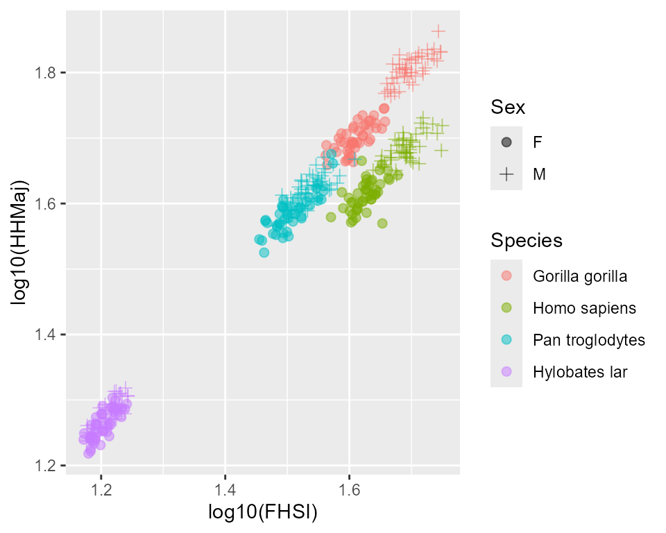
GordonAJBA
The GordonAJBA data set was pubished as supplemental
material in Gordon (2025b). It includes sex information and metric data
for eight postcranial variables collected for western lowland gorillas,
modern humans, central chimpanzees, and the fossil species
Australopithecus afarensis and A. africanus.
str(GordonAJBA)
#> 'data.frame': 189 obs. of 14 variables:
#> $ Taxon : Factor w/ 5 levels "Gorilla","Homo",..: 1 1 1 1 1 1 1 1 1 1 ...
#> $ Species : Factor w/ 5 levels "Gorilla gorilla",..: 1 1 1 1 1 1 1 1 1 1 ...
#> $ Sex : Factor w/ 3 levels "F","M","U": 1 1 1 1 1 1 1 1 1 1 ...
#> $ HUMHEAD : num 50.3 46.6 50.1 49.9 49.4 ...
#> $ ELBOW0.5 : num 38.5 36.6 35.3 37.8 37.8 ...
#> $ RADTV : num 27.5 25.8 26.5 26.4 26.5 ...
#> $ FEMHEAD : num 39.2 40.7 38.6 41.5 42.8 ...
#> $ FEMSHAFT0.5: num 32.8 32.1 34.2 30.6 30.9 ...
#> $ DISTFEM0.5 : num 52.5 48 48.8 50.2 51.3 ...
#> $ PROXTIB0.5 : num 56.3 57.6 52.7 56.3 56.9 ...
#> $ DISTTIB0.5 : num 27.9 28.3 25.3 27.9 27.5 ...
#> $ Stratum : Factor w/ 7 levels "SH-1","SH-2",..: NA NA NA NA NA NA NA NA NA NA ...
#> $ Age.old : num NA NA NA NA NA NA NA NA NA NA ...
#> $ Age.young : num NA NA NA NA NA NA NA NA NA NA ...Again, let’s visualize some of the data:
#> Warning: Removed 44 rows containing missing values or values outside the scale range
#> (`geom_point()`).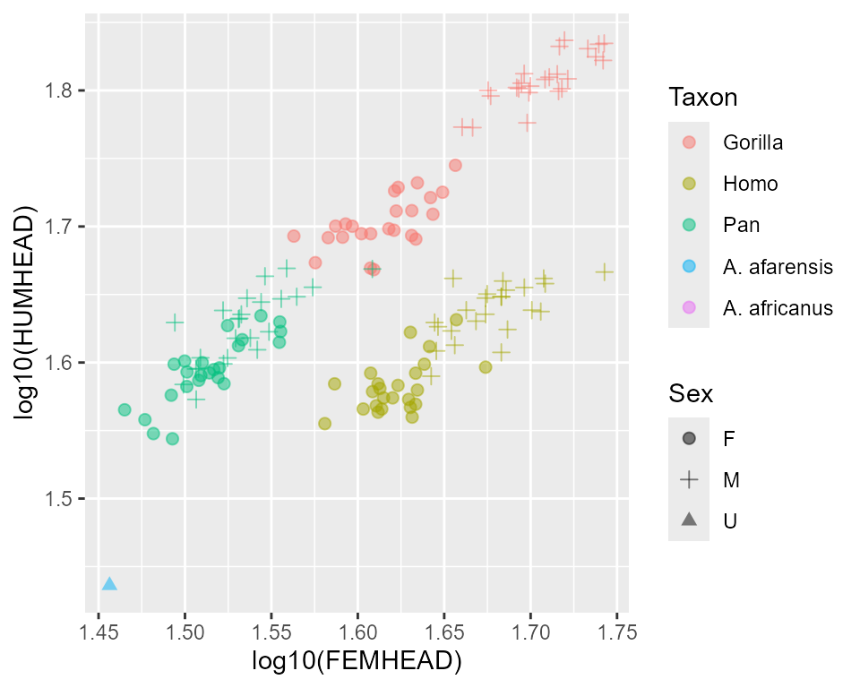
Although the above plot only includes one fossil specimen, that’s because this data set includes fossils with missing observations, and only one specimen includes both of the plotted variables (that warning message is reporting the number of specimens that don’t record both measurements in the plot). Here’s a look at the first few fossil specimens in that data set:
| Species | Sex | HUMHEAD | ELBOW0.5 | RADTV | FEMHEAD | FEMSHAFT0.5 | DISTFEM0.5 | PROXTIB0.5 | DISTTIB0.5 | |
|---|---|---|---|---|---|---|---|---|---|---|
| A.L. 128-1/129-1 | A. afarensis | U | NA | NA | NA | NA | 21.6 | 37.5 | 39.9 | NA |
| A.L. 137-48a | A. afarensis | U | NA | 22.9 | NA | NA | NA | NA | NA | NA |
| A.L. 152-2 | A. afarensis | U | NA | NA | NA | 33.1 | 19.9 | NA | NA | NA |
| A.L. 211-1 | A. afarensis | U | NA | NA | NA | NA | 28.2 | NA | NA | NA |
| A.L. 288-1 | A. afarensis | U | 27.3 | 20.5 | 15 | 28.6 | 20.9 | NA | 40.3 | 18.1 |
| A.L. 322-1 | A. afarensis | U | NA | 22.9 | NA | NA | NA | NA | NA | NA |
The function dimorph() has two procedures for estimating
dimorphism in multivariate data sets with missing data, although one of
those procedures has been argued to be highly flawed (more on this
below).
Estimating size dimorphism with dimorph()
The function dimorph() allows users to calculate actual
dimorphism (as a ratio of male size divided by female size) or any of
several published estimators of dimorphism. These can be calculated for
univariate data sets, multivariate data sets with complete observations
for all individuals and variables, or multivariate data sets with
missing data. Below we’ll work through how to use dimorph()
to generate these different values for different types of data. In
addition, the help page for dimorph() has more detail about
all of the arguments that can be modified as well as more examples
illustrating their effects.
Univariate estimates
The argument method in dimorph() takes a
character string specifying the univariate method used to calculate or
estimate dimorphism for a vector of values x, which should
not be log-transformed in advance. The argument center
specifies whether dimorph() should log-transform the data
or not for certain procedures, but providing logged values to
dimorph() will result in the calculation of ratios of
logged data, which are mathematically nonsensical (although differences
in logged data are equivalent to log-transformed ratios). The methods
available in dimorph() include the calculation for actual
sexual size dimorphism, and also estimation techniques that fall into
three general types of methods as distinguished by Gordon (2025a):
grouping methods, finite mixture model methods, and variance-based
methods. Options include:
Actual dimorphism
-
"SSD": Sexual Size Dimorphism. Follows Smith (1999). Calculates actual sexual dimorphism in the sample as the ratio of mean male size to mean female size (often referred to in the paleoanthropological literature as the Index of Sexual Dimorphism, ISD). Sex-specific means are calculated as geometric means by default (the argumentcenter = "geomean") but they can be calculated as arithmetic means (center = "mean"). Requires the argumentsexto be specified. This is the default procedure fordimorph().
Grouping methods
These methods all use algorithms that separate a sample into two groups and produces a single ratio based on one or more ratios of larger measurements to smaller measurements. None of these methods requires sex information.
"MMR": Mean Method Ratio. Follows Godfrey et al. (1993). This procedure splits the sample at its mean, then calculates the ratio of the mean of measurements larger than the overall mean to the mean of measurements smaller than the overall mean. If any measurements are exactly equal to the overall mean, they contribute to both the larger and smaller group as half an individual in a weighted mean. Depending oncenter, the overall mean and subgroup means are calculated either as geometric means or arithmetic means. Ignoressex."BDI": Binomial Dimorphism Index. Follows Reno et al. (2003). Given n measurements, this calculates all possible ratios of the mean of larger specimens to the mean of smaller specimens when the sample is split into the k largest specimens and n-k smallest specimens, where k ranges from 1 to n-1. A weighted mean is then calculated for all ratios, where the weights are equal to the probability of k successes in n trials in a binomial distribution where p=0.5. Depending oncenter, means are calculated either as geometric means or arithmetic means. Ignoressex."ERM": Exact Resampling Method. Modification of Lee’s (2001) Assigned Resampling Method (ARM) following Gordon (2025a). ARM is a resampling-based estimate of dimorphism that repeatedly samples two values with replacement fromx, then calculates their ratio as long as both are neither more than 0.5 standard deviations above the mean or both 0.5 standard deviations below the mean (otherwise the pair is rejected). ARM typically oversamples the possible combination of two values sampled from a small sample (as originally described it samples 1,000 pairs, whereas a sample of 20 measurements only has 210 possible pairs) and sampling with replacement biases dimorphism estimates downwards by the incorporation of multiple ratios of 1 whenever the same value is sampled twice and is not rejected by retention criterion."ERM"performs an exact resampling of all possible pairs of values without replacement, but otherwise follows Lee’s algorithm. Depending oncenter, the procedure is applied in either logarithmic ("geomean") or raw ("mean") data space. Ignoressex.
Finite mixture model methods
Instead of calculating ratios of some combinations of sample measurements, these methods make assumptions about the underlying distributions of female and male size that the sample is drawn from. The methods then estimate the difference in population means of those underlying distributions — not by assigning specimens to particular distributions and calculating sample means, but by using the specimens collectively to estimate population distribution parameters. None of these methods requires sex information.
"FMA": Finite Mixture Analysis. Follows Godfrey et al. (1993). Assumes that the sample is a mixture of two underlying normal or lognormal distributions, that the sample contains an equal proportion of females and males, and that those two subsamples have equal variance. It then estimates the maximum separation of the two means. Depending oncenter, the underlying distributions are treated as either normal ("mean") or lognormal ("geomean"). Ignoressex. Note that Godfrey et al. specifically stated that this application is for when the sample appears unimodal rather than bimodal (it was developed for evaluating dimorphism in subfossil lemurs, members of a clade with very low dimorphism)."MoM": Method of Moments. Follows Josephson et al. (1996). Assumes that the sample is a mixture of two underlying lognormal distributions, that the sample contains an equal proportion of females and males, and that those two subsamples have equal variance. It then uses three moments around the mean of the logged combined sex distribution to estimate the difference in means of the underlying lognormal distributions. This calculation is always performed on the log-transformed data regardless of the value ofcenter. Ignoressex."BFM": Bayesian Finite Mixture. Follows Gordon (2025). Assumes that the sample is a finite mixture of two underlying normal or lognormal distributions. Unlike"FMA"and"MoM", it estimates the proportion of females and males assuming that they may not be equal, and uses a Bayesian Information Criterion (BIC) approach to select between a model that estimates a single variance for both sexes and a model that estimates variances separately for the two constituent distributions usingmclustBIC. It then calculates the ratio of the two estimated means. Depending on center, the underlying distributions are treated as either normal ("mean") or lognormal ("geomean"). Ignoressex. When performed on lognormal data, this method is similar to the pdPeak method of Sasaki et al. (2021), particularly when the BIC procedure selects an equal variance model (which it typically does).
Variance-based methods
These methods avoid making any assumptions about sex identity or underlying distribution parameters, and instead simply calculate a measure of variability in proportional size for the whole sample.
"CV": Coefficient of Variation. Calculates the coefficient of variation as the standard deviation ofxdivided by the mean ofxthen multiplied by 100. This calculation is always performed on the raw data regardless of the value of center (an analogous method using logarithmic data is"sdlog"). Ignoressex. Additionally, Sokal and Braumann’s (1980) size correction factor can be applied by settingncorrectiontoTRUE, although this isFALSEby default."CVsex": Modified Coefficient of Variation. Calculates a modified version of the coefficient of variation: the standard deviation is replaced by the square root of the sum of squared differences of every value ofxfrom the unweighted mean of the sex-specific means inxdivided by the square root of n-1, and this is divided by the unweighted mean of the sex-specific means, then multiplied by 100. This calculation is always performed on the raw data regardless of the value of center (an analogous method using logarithmic data is"sdlogsex"). Requiressex. Additionally, Sokal and Braumann’s (1980) size correction factor can be applied by settingncorrectiontoTRUE, although this isFALSEby default."sdlog": Standard Deviation of Logged Data. First,xis log-transformed using the natural logarithm, then the standard deviation is calculated. This is a measure of proportional variation of the values ofxabout their geometric mean; i.e., analagous to the coefficient of variation for a lognormal distribution. This calculation is always performed on the log-transformed data regardless of the value of center (an analogous method using raw data is"CV"). Ignoressex."sdlogsex": Modified Standard Deviation of Logged Data. First,xis log-transformed using the natural logarithm. Then a modified version of standard deviation is calculated: the square root of the sum of squared differences of every logged value ofxfrom the unweighted mean of the sex-specific means of log-transformedx, divided by the square root of n-1. This calculation is always performed on the log-transformed data regardless of the value ofcenter(an analogous method using raw data is"CVsex"). Requiressex.
Applying the methods
Let’s explore the application of each of these methods. First, let’s
pull out data for a single species, western gorillas, from the
apelimbart data object.
gorillas <- apelimbart[apelimbart$Species=="Gorilla gorilla",]Now let’s calculate actual dimorphism for a single variable in this
sample, femoral head superoinferior diameter (FHSI).
dimorph() expects a vector of numeric values provided as
the initial argument, x. For some methods it also requires
a vector specifying the sex of each specimen (supplied to the argument
sex), otherwise an error will be generated. If the argument
sex includes NAs, either those specimens will
be dropped before calculating dimorphism or the function will return
NA, depending on the value of argument
na.rm.
gorSSD <- dimorph(x=gorillas$FHSI, method="SSD", sex=gorillas$Sex)
gorSSD
#> SSD
#> 1.22447Dimorphism is always returned as a ratio of values in the original
(unlogged) units rather than the logarithm of that ratio, even when it
is calculated using logged data (which is effectively what happens when
using the geometric means of raw data, the default behavior of the
function dimorph()).
The function summary() provides more detailed
information, including the number of variables (always 1 for univariate
analyses), the number of specimens included in the analysis (this
excludes specimens with missing data in univariate analyses), the
proportion of females in the sample when sex information is included,
the mean function (geometric or arithmetic) used on the data, and the
estimated means for the numerator and denominator of the dimorphism
ratio for every method that calculates them. These are sex-specific male
and female means in the case of actual dimorphism. Also reported is
information specific to multivariate analyses that will be addressed
later.
summary(gorSSD)
#> estimate: 1.22447
#> univariate method: SSD
#> no. of variables (overall): 1
#> no. of specimens (overall): 94
#> female proportion of sample (overall): 0.5
#> no. of variables (realized): 1
#> no. of specimens (realized): 94
#> female proportion of sample (realized): 0.5
#> proportion of missing data (overall): 0
#> proportion of missing data (realized): 0
#> mean function: geometric mean
#> ratio numerator and denominator: 49.98, 40.81Now let’s take a look at the various methods for estimating dimorphism, starting with the grouping methods. These are all methods that estimate dimorphism in the absence of information about the sex of each specimen by splitting a sample into two sub-samples of larger and smaller specimens. They also all return an estimate of dimorphism as a ratio of values.
summary(dimorph(x=gorillas$FHSI, method="MMR"))
#> estimate: 1.2261
#> univariate method: MMR
#> no. of variables (overall): 1
#> no. of specimens (overall): 94
#> female proportion of sample (overall): unknown
#> no. of variables (realized): 1
#> no. of specimens (realized): 94
#> female proportion of sample (realized): unknown
#> proportion of missing data (overall): 0
#> proportion of missing data (realized): 0
#> mean function: geometric mean
#> ratio numerator and denominator: 49.69, 40.52
summary(dimorph(x=gorillas$FHSI, method="BDI"))
#> estimate: 1.2243
#> univariate method: BDI
#> no. of variables (overall): 1
#> no. of specimens (overall): 94
#> female proportion of sample (overall): unknown
#> no. of variables (realized): 1
#> no. of specimens (realized): 94
#> female proportion of sample (realized): unknown
#> proportion of missing data (overall): 0
#> proportion of missing data (realized): 0
#> mean function: geometric mean
summary(dimorph(x=gorillas$FHSI, method="ERM"))
#> estimate: 1.18265
#> univariate method: ERM
#> no. of variables (overall): 1
#> no. of specimens (overall): 94
#> female proportion of sample (overall): unknown
#> no. of variables (realized): 1
#> no. of specimens (realized): 94
#> female proportion of sample (realized): unknown
#> proportion of missing data (overall): 0
#> proportion of missing data (realized): 0
#> mean function: geometric meanNotice that only "MMR" reports a numerator and
denominator mean. All three methods split the sample into larger and
smaller measurements to calculate a ratio. But while "MMR"
only does so once, "BDI" and "ERM" do so
multiple times, and in those cases the full set of numerators and
denominators are not stored in the resulting object (to save
memory).
Now for the finite mixture model methods.
summary(dimorph(x=gorillas$FHSI, method="FMA"))
#> estimate: 1.1292
#> univariate method: FMA
#> no. of variables (overall): 1
#> no. of specimens (overall): 94
#> female proportion of sample (overall): unknown
#> no. of variables (realized): 1
#> no. of specimens (realized): 94
#> female proportion of sample (realized): unknown
#> proportion of missing data (overall): 0
#> proportion of missing data (realized): 0
#> mean function: geometric mean
#> ratio numerator and denominator: 47.99, 42.5
summary(dimorph(x=gorillas$FHSI, method="MoM"))
#> estimate: 1.22663
#> univariate method: MoM
#> no. of variables (overall): 1
#> no. of specimens (overall): 94
#> female proportion of sample (overall): unknown
#> no. of variables (realized): 1
#> no. of specimens (realized): 94
#> female proportion of sample (realized): unknown
#> proportion of missing data (overall): 0
#> proportion of missing data (realized): 0
#> mean function: geometric mean
summary(dimorph(x=gorillas$FHSI, method="BFM"))
#> estimate: 1.21998
#> univariate method: BFM
#> no. of variables (overall): 1
#> no. of specimens (overall): 94
#> female proportion of sample (overall): unknown
#> no. of variables (realized): 1
#> no. of specimens (realized): 94
#> female proportion of sample (realized): unknown
#> proportion of missing data (overall): 0
#> proportion of missing data (realized): 0
#> mean function: geometric mean
#> ratio numerator and denominator: 49.72, 40.75
#> BFM model parameters:
#> BFM estimate of proportion of sample composed of smaller sex: 0.48289
#> BFM model of variance: equal for both sexes
#> BFM estimate of variance: 0.00354 (logged data)Unlike the grouping methods, these models do not assign individual
specimens to groups, but rather use them collectively to estimate
properties of the underlying distributions that they are sampled from.
"MoM" estimates the difference in the means of two
lognormal distributions rather than the means themselves, so no
numerator or denominator values are calculated. "FMA" and
"BFM" do estimate the population means, so those estimates
are provided, and "BFM" includes additional information
about the finite mixture model.
And finally, the variance-based methods. Unlike all of the other
methods, these do not provide direct estimates of dimorphism ratios.
Instead, they are estimates of proportional size variation in the
sample. Methods based on the coefficient of variation can opt to apply
the sample size correction factor of Sokal and Braumann (1980) by
specifying ncorrection = TRUE.
summary(dimorph(x=gorillas$FHSI, method="CV"))
#> estimate: 11.65676
#> univariate method: CV
#> no. of variables (overall): 1
#> no. of specimens (overall): 94
#> female proportion of sample (overall): unknown
#> no. of variables (realized): 1
#> no. of specimens (realized): 94
#> female proportion of sample (realized): unknown
#> proportion of missing data (overall): 0
#> proportion of missing data (realized): 0
#> mean function: arithmetic mean
summary(dimorph(x=gorillas$FHSI, method="CV", ncorrection=TRUE))
#> estimate: 11.68776
#> univariate method: CV (sample size correction factor applied)
#> no. of variables (overall): 1
#> no. of specimens (overall): 94
#> female proportion of sample (overall): unknown
#> no. of variables (realized): 1
#> no. of specimens (realized): 94
#> female proportion of sample (realized): unknown
#> proportion of missing data (overall): 0
#> proportion of missing data (realized): 0
#> mean function: arithmetic meanThe values for "CV" estimates are unitless, expressing
the standard deviation of the sample as a percentage of the arithmetic
mean of the sample. Note that the mean function for "CV" is
always the arithmetic mean, regardless of the user-specified value of
center. An analogous method using the geometric mean is
"sdlog", discussed below.
If sex designation data is available for all specimens, the method
"CVsex" can be used. Rather than using the mean of the
entire data set in the calculation of standard deviation and CV, the
mean of sex-specific means is used instead. This counteracts bias
introduced by uneven sex ratios and/or different variances for the
sex-specific distributions.
summary(dimorph(x=gorillas$FHSI, method="CVsex", sex=gorillas$Sex))
#> estimate: 11.65676
#> univariate method: CVsex
#> no. of variables (overall): 1
#> no. of specimens (overall): 94
#> female proportion of sample (overall): 0.5
#> no. of variables (realized): 1
#> no. of specimens (realized): 94
#> female proportion of sample (realized): 0.5
#> proportion of missing data (overall): 0
#> proportion of missing data (realized): 0
#> mean function: arithmetic mean
summary(dimorph(x=gorillas$FHSI, method="CVsex", sex=gorillas$Sex, ncorrection=TRUE))
#> estimate: 11.68776
#> univariate method: CVsex (sample size correction factor applied)
#> no. of variables (overall): 1
#> no. of specimens (overall): 94
#> female proportion of sample (overall): 0.5
#> no. of variables (realized): 1
#> no. of specimens (realized): 94
#> female proportion of sample (realized): 0.5
#> proportion of missing data (overall): 0
#> proportion of missing data (realized): 0
#> mean function: arithmetic meanIn addition to "CV", an alternative (and arguably better
- see Gordon, 2025a) method for measuring relative variability is to
calculate the standard deviation of logged data ("sdlog"),
which is also a measure of proportional dispersion in the sample. Like
"CV" and "CVsex", there is also a version of
this approach that uses the mean of sex-specific means rather than the
overall mean when calculating standard deviation
("sdlogsex").
summary(dimorph(x=gorillas$FHSI, method="sdlog"))
#> estimate: 0.11642
#> univariate method: sdlog
#> no. of variables (overall): 1
#> no. of specimens (overall): 94
#> female proportion of sample (overall): unknown
#> no. of variables (realized): 1
#> no. of specimens (realized): 94
#> female proportion of sample (realized): unknown
#> proportion of missing data (overall): 0
#> proportion of missing data (realized): 0
#> mean function: geometric mean
summary(dimorph(x=gorillas$FHSI, method="sdlogsex", sex=gorillas$Sex))
#> estimate: 0.11642
#> univariate method: sdlogsex
#> no. of variables (overall): 1
#> no. of specimens (overall): 94
#> female proportion of sample (overall): 0.5
#> no. of variables (realized): 1
#> no. of specimens (realized): 94
#> female proportion of sample (realized): 0.5
#> proportion of missing data (overall): 0
#> proportion of missing data (realized): 0
#> mean function: geometric meanThe values for these estimates are in the units of difference in the
logged original data. According to the log rules,
,
so these units are equivalent to units for the logarithm of ratios,
which are unitless. The standard deviation of logged data is essentially
an average of proportional deviation of observations around the
geometric mean of a sample. Note that the mean function for
"sdlog" and "sdlogsex" is always the geometric
mean, regardless of the user-specified value of center.
An easier way to compare all of these different estimates is by using
the argument dfout. Setting it to TRUE makes
dimorph() output information in a data frame format that
can be combined across different estimates.
allmethods <- rbind(dimorph(x=gorillas$FHSI, method="SSD", dfout=TRUE, sex=gorillas$Sex),
dimorph(x=gorillas$FHSI, method="MMR", dfout=TRUE),
dimorph(x=gorillas$FHSI, method="BDI", dfout=TRUE),
dimorph(x=gorillas$FHSI, method="ERM", dfout=TRUE),
dimorph(x=gorillas$FHSI, method="FMA", dfout=TRUE),
dimorph(x=gorillas$FHSI, method="MoM", dfout=TRUE),
dimorph(x=gorillas$FHSI, method="BFM", dfout=TRUE),
dimorph(x=gorillas$FHSI, method="CV", dfout=TRUE),
dimorph(x=gorillas$FHSI, method="CVsex", dfout=TRUE, sex=gorillas$Sex),
dimorph(x=gorillas$FHSI, method="sdlog", dfout=TRUE),
dimorph(x=gorillas$FHSI, method="sdlogsex", dfout=TRUE, sex=gorillas$Sex))| estimate | methodUni | methodMulti | center | n.vars.overall | n.specimens.overall | proportion.female.overall | n.vars.realized | n.specimens.realized | proportion.female.realized | proportion.missingdata.overall | proportion.missingdata.realized | proportion.templated | |
|---|---|---|---|---|---|---|---|---|---|---|---|---|---|
| SSD | 1.224470 | SSD | NA | geomean | 1 | 94 | 0.5 | 1 | 94 | 0.5 | 0 | 0 | NA |
| MMR | 1.226097 | MMR | NA | geomean | 1 | 94 | NA | 1 | 94 | NA | 0 | 0 | NA |
| BDI | 1.224297 | BDI | NA | geomean | 1 | 94 | NA | 1 | 94 | NA | 0 | 0 | NA |
| ERM | 1.182654 | ERM | NA | geomean | 1 | 94 | NA | 1 | 94 | NA | 0 | 0 | NA |
| FMA | 1.129200 | FMA | NA | geomean | 1 | 94 | NA | 1 | 94 | NA | 0 | 0 | NA |
| MoM | 1.226632 | MoM | NA | geomean | 1 | 94 | NA | 1 | 94 | NA | 0 | 0 | NA |
| BFM | 1.219985 | BFM | NA | geomean | 1 | 94 | NA | 1 | 94 | NA | 0 | 0 | NA |
| CV | 11.656756 | CV | NA | mean | 1 | 94 | NA | 1 | 94 | NA | 0 | 0 | NA |
| CVsex | 11.656756 | CVsex | NA | mean | 1 | 94 | 0.5 | 1 | 94 | 0.5 | 0 | 0 | NA |
| sdlog | 0.116417 | sdlog | NA | geomean | 1 | 94 | NA | 1 | 94 | NA | 0 | 0 | NA |
| sdlogsex | 0.116417 | sdlogsex | NA | geomean | 1 | 94 | 0.5 | 1 | 94 | 0.5 | 0 | 0 | NA |
As mentioned above, several of these columns are only relevant for
estimates of dimorphism based on multivariate data sets with missing
data. Let’s take a look at how dimorph() handles
multivariate data.
Multivariate estimates
The argument methodMulti in dimorph() takes
a character string specifying the multivariate method used to calculate
or estimate dimorphism for a matrix or dataframe of metric values
x (note that regardless of the value of this argument,
multivariate estimation procedures will only be carried out if
x is a multivariate data set). As with the univariate
methods, values in x should not be log-transformed. Options
for methodMulti include:
“GMsize”: If
xis a dataframe or matrix, this method first calculates overall size as the geometric mean of measurements in all variables for those specimens that are complete for all variables in the data set. The selected univariate method is then applied to this measure of overall size. If any specimens are missing data, those specimens will be dropped from the analysis ifna.rm=TRUE, or the function will returnNAifna.rm=FALSE.“GMM”: This method follows the Geometric Mean Method of Gordon et al. (2008). The selected univariate method is applied to all variables separately (where specimens missing data for a given variable are ignored). Then the geometric mean is calculated of the dimorphism estimates for all variables, producing a single estimate of dimorphism for the whole data set. Note that this methodology is not appropriate for variance-based univariate methods; i.e.,
"CV","CVsex","sdlog", and"sdlogsex"(see Gordon 2025a for a detailed explanation). This method is the default formethodMulti.“TM”: This method follows the Template Method of Reno et al. (2003). A variable of interest is specified by the user with the argument
templatevar. The algorithm identifies a template individual that can be used to estimate the largest number of values for the selected variable of interest. It does so by calculating ratios between the value of the variable of interest and other variables in the template individual, which are then multiplied by the value of those other variables in individuals missing the target variable. The template individual selected is the specimen that allows for the largest number of target variable estimates, maximizing the data set for that variable. A user-selected univariate method is then applied to the combined data set of actual and estimated values for the target variable. Note that this method has been critiqued by several authors on multiple grounds (see Gordon 2025a for a summary of those critiques and references), and is only included here for the sake of completeness.
Equivalence of "GMsize" and "GMM" SSD
values with complete data
To begin with, let’s calculate actual dimorphism for a sample with
complete data using the "GMsize" multivariate method in
conjunction with the "SSD" univariate method. We’ll do so
using all ten linear variables for the gorilla sample in
apelimbart.
SSDvars_apelimbart <- c("FHSI", "TPML", "TPMAP", "TPLAP", "HHMaj",
"HHMin", "RHMaj", "RHMin", "RDAP", "RDML")
Gg_GMsize <- dimorph(x=gorillas[,SSDvars_apelimbart], method="SSD", methodMulti="GMsize",
sex=gorillas$Sex, details=TRUE)
summary(Gg_GMsize)
#> estimate: 1.25506
#> univariate method: SSD
#> multivariate method: GMsize
#> no. of variables (overall): 1 (geometric mean of 10 variables)
#> no. of specimens (overall): 94
#> female proportion of sample (overall): 0.5
#> no. of variables (realized): 1 (geometric mean of 10 variables)
#> no. of specimens (realized): 94
#> female proportion of sample (realized): 0.5
#> proportion of missing data (overall): 0
#> proportion of missing data (realized): 0
#> mean function: geometric mean
#> ratio numerator and denominator: 45.78, 36.48The summary of Gg_GMsize records the number of variables
as "1 (geometric mean of 10 variables)". That’s because
overall size is calculated for each specimen (as the geometric mean for
all ten measurements for that specimen), reducing the data set to a
single variable of overall size, and then dimorphism is calculated for
that one measure of size. That also allows the ratio numerator and
denominator to be reported. That will be different when using
"GMM".
Gg_GMM <- dimorph(x=gorillas[,SSDvars_apelimbart], method="SSD", methodMulti="GMM",
sex=gorillas$Sex, details=TRUE)
summary(Gg_GMM)
#> estimate: 1.25506
#> univariate method: SSD
#> multivariate method: GMM
#> no. of variables (overall): 10
#> no. of specimens (overall): 94
#> female proportion of sample (overall): 0.5
#> no. of variables (realized): 10
#> no. of specimens (realized): 94
#> female proportion of sample (realized): 0.5
#> proportion of missing data (overall): 0
#> proportion of missing data (realized): 0
#> mean function: geometric meanHere, dimorphism is calculated separately for each variable and then
combined into a single value. So the summary of Gg_GMM
reports the number of variables simply as 10, and it doesn’t report the
ratio numerator and denominator because there are ten ratios that are
combined to give the final dimorphism estimate.
But notice that "GMsize" and "GMM" produce
identical measures of SSD in this case, despite calculating it in two
different ways: "GMsize" first calculates a geometric mean
of all measurements for each specimen to get a measure of overall size,
then calculates "SSD" for that measure of overall size;
"GMM" first calculates "SSD" separately for
all ten variables, then calculates the geometric mean of all ten
measures of "SSD". Gordon et al. (2008) demonstrated that
these are mathematically identical procedures when all specimens are
complete for all measurements. And it’s not the case that this is
dependent on complete separation in size between the sexes - we can see
that the same property also holds for gibbons, which have virtually no
dimorphism and a high degree of overlap between sex-specific
distributions.
gibbons <- apelimbart[apelimbart$Species=="Hylobates lar",]
bothmethods <- rbind(dimorph(x=gibbons[,SSDvars_apelimbart], method="SSD", methodMulti="GMsize",
sex=gibbons$Sex, dfout=TRUE),
dimorph(x=gibbons[,SSDvars_apelimbart], method="SSD", methodMulti="GMM",
sex=gibbons$Sex, dfout=TRUE))Printing bothmethods produces the following, with
identical values for dimorphism using either multivariate method:
| estimate | methodUni | methodMulti | center | n.vars.overall | n.specimens.overall | proportion.female.overall | n.vars.realized | n.specimens.realized | proportion.female.realized | proportion.missingdata.overall | proportion.missingdata.realized | proportion.templated | |
|---|---|---|---|---|---|---|---|---|---|---|---|---|---|
| GMsize.SSD | 1.028516 | SSD | GMsize | geomean | 10 | 94 | 0.5 | 10 | 94 | 0.5 | 0 | 0 | NA |
| GMM.SSD | 1.028516 | SSD | GMM | geomean | 10 | 94 | 0.5 | 10 | 94 | 0.5 | 0 | 0 | NA |
Note that "GMsize" calculates a geometric mean of all
included variables, so it cannot be used in cases where there is any
missing data. However, because "GMM" calculates dimorphism
(or some estimate of dimorphism) separately for each variable, then
combines them with a geometric mean, it can be used for any data set
where each variable is represented by at least two specimens.
Often data sets that are missing metric data are also missing sex
identification for specimens (e.g. fossil data sets). The property of
equality between "GMsize" and "GMM" with
complete metric data applies to "SSD" alone, which requires
sex information, although other ratio-based estimates that don’t require
sex information approach equality using the two multivariate methods. By
extension, using the "GMM" multivariate method in
conjunction with any of the ratio-based univariate methods provides
close estimates of "GMsize" values. However,
"GMM" cannot be used with any of the variance-based
univariate methods (i.e., "CV", "CVsex",
"sdlog", "sdlogsex"). This is because a
geometric mean of variance-based estimates across multiple variables
will only equal the value for the same variance-based estimator
calculated for overall size if all of the variables are perfectly
correlated with each other (Gordon, 2025a), which effectively never
happens with morphological data.
Missing data applications: "GMM"
So let’s turn our attention to the two multivariate methods that do
allow for missing data, "GMM" and "TM". We’ll
start with the geometric mean method ("GMM"), which was
developed by Gordon et al. (2008) in response to concerns over the
earlier template method ("TM"). The "GMM"
procedure is explained above, although more detail can be found in
Gordon et al. (2008) and Gordon (2025a).
For these examples, we’ll turn to the GordonAJBA data
set (published in Gordon, 2025b) to estimate dimorphism for a sample of
eight postcranial linear measurements for the fossil hominin
Australopithecus afarensis.
SSDvars <- c("HUMHEAD", "ELBOW0.5", "RADTV", "FEMHEAD",
"FEMSHAFT0.5", "DISTFEM0.5", "PROXTIB0.5", "DISTTIB0.5")
Aafarensis <- GordonAJBA[GordonAJBA$Species=="A. afarensis", SSDvars]Let’s take a look at the data.
| HUMHEAD | ELBOW0.5 | RADTV | FEMHEAD | FEMSHAFT0.5 | DISTFEM0.5 | PROXTIB0.5 | DISTTIB0.5 | |
|---|---|---|---|---|---|---|---|---|
| A.L. 128-1/129-1 | NA | NA | NA | NA | 21.6 | 37.5 | 39.9 | NA |
| A.L. 137-48a | NA | 22.9 | NA | NA | NA | NA | NA | NA |
| A.L. 152-2 | NA | NA | NA | 33.1 | 19.9 | NA | NA | NA |
| A.L. 211-1 | NA | NA | NA | NA | 28.2 | NA | NA | NA |
| A.L. 288-1 | 27.3 | 20.5 | 15.0 | 28.6 | 20.9 | NA | 40.3 | 18.1 |
| A.L. 322-1 | NA | 22.9 | NA | NA | NA | NA | NA | NA |
| A.L. 330-6 | NA | NA | NA | NA | NA | NA | 52.9 | NA |
| A.L. 333-3 | NA | NA | NA | 40.2 | 31.2 | NA | NA | NA |
| A.L. 333-4 | NA | NA | NA | NA | NA | 45.6 | NA | NA |
| A.L. 333-6 | NA | NA | NA | NA | NA | NA | NA | 21.7 |
| A.L. 333-7 | NA | NA | NA | NA | NA | NA | NA | 24.8 |
| A.L. 333-42 | NA | NA | NA | NA | NA | NA | 50.6 | NA |
| A.L. 333-96 | NA | NA | NA | NA | NA | NA | NA | 21.0 |
| A.L. 333-107 | 35.1 | NA | NA | NA | NA | NA | NA | NA |
| A.L. 333-131 | NA | NA | NA | NA | 33.9 | NA | NA | NA |
| A.L. 333w-40 | NA | NA | NA | NA | 30.8 | NA | NA | NA |
| A.L. 333w-56 | NA | NA | NA | NA | NA | 45.0 | NA | NA |
| A.L. 333x-14 | NA | NA | 22.2 | NA | NA | NA | NA | NA |
| A.L. 333x-26 | NA | NA | NA | NA | NA | NA | 52.2 | NA |
| A.L. 827-1 | NA | NA | NA | 38.0 | 23.6 | NA | NA | NA |
As you can see, there’s quite a bit of missing data across the
sample, and no specimen is complete for all variables. Now let’s use the
"MMR" univariate method in conjunction with the
"GMM" multivariate method to estimate dimorphism in this
sample.
When samples are missing data, some specimens and/or variables may
not meet the criteria for inclusion in the analysis, in which case
dimorph() generates a warning message and removes them
before estimating dimorphism. In the case of "GMM", all
variables must include at least two observations so that dimorphism can
be estimated for each variable; any variables that don’t are removed,
and any specimens that no longer have observations are also removed.
Setting details=TRUE when running dimorph()
records additional information about the specific set of variables and
specimens that make it into the analysis.
Aa_GMM <- dimorph(x=Aafarensis, method="MMR", methodMulti="GMM", details=TRUE)
Aa_GMM
#> GMM.MMR
#> 1.280896In this particular sample, all variables and specimens are usable
with the "GMM" method. We can take a detailed look at the
results by using summary() with
verbose=TRUE.
summary(Aa_GMM, verbose=TRUE)
#> estimate: 1.2809
#> univariate method: MMR
#> multivariate method: GMM
#> no. of variables (overall): 8
#> no. of specimens (overall): 20
#> female proportion of sample (overall): unknown
#> no. of variables (realized): 8
#> no. of specimens (realized): 20
#> female proportion of sample (realized): unknown
#> proportion of missing data (overall): 0.80625
#> proportion of missing data (realized): 0.80625
#> mean function: geometric mean
#>
#> Included variables:
#> HUMHEAD
#> ELBOW0.5
#> RADTV
#> FEMHEAD
#> FEMSHAFT0.5
#> DISTFEM0.5
#> PROXTIB0.5
#> DISTTIB0.5
#>
#> Included specimens:
#> A.L. 128-1/129-1
#> A.L. 137-48a
#> A.L. 152-2
#> A.L. 211-1
#> A.L. 288-1
#> A.L. 322-1
#> A.L. 330-6
#> A.L. 333-3
#> A.L. 333-4
#> A.L. 333-6
#> A.L. 333-7
#> A.L. 333-42
#> A.L. 333-96
#> A.L. 333-107
#> A.L. 333-131
#> A.L. 333w-40
#> A.L. 333w-56
#> A.L. 333x-14
#> A.L. 333x-26
#> A.L. 827-1When verbose=TRUE, summary() provides a
list of included variables and included specimens. Regardless of the
value of verbose, summary() provides some
information that wasn’t relevant for univariate analyses. The output
makes a distinction between “overall” and “realized” for number of
variables, number of specimens, and proportion of females in the sample.
“Overall” refers to the data set provided to dimorph(),
while “realized” refers to the data set actually used to estimate
dimorphism; i.e., the remaining sample after any ineligible variables
and/or individuals have been removed.
In addition, summary() also reports the proportion of
missing data in both the provided sample and in the sample that remains
after excluding ineligible variables and specimens. This is simply the
number of NAs in the data set divided by the total number
of sells in the data matrix (in this case, 8 variables times 20
individuals = 160). In this particular data set, about 80.6% of the data
matrix contains NAs.
Missing data applications: "TM" (use with
caution!)
To estimate dimorphism using the template method, we not only have to set
methodMulti="TM", but we also have to specify which variable should be the template variable. This is the variable that dimorphism will be estimated for; it is measured directly in specimens that preserve it, and it is estimated in specimens that don’t have it. That estimation occurs as follows. A template specimen is identified bydimorph()that preserves the template variable and several other variables. To estimate the value of the template variable in a specimen that doesn’t preserve it, the value of a variable in that specimen that is also found in the template specimen is multiplied by the corresponding ratio in the template specimen.Important note: this procedure is equivalent to a regression procedure with zero degrees of freedom (and thus has infinitely large prediction intervals) that assumes an isometric relationship between all variables and zero variation around regression lines for all data points. These assumptions will always be violated, and previous research has shown that the template method produces a high degree of error in estimates of the template variable and resulting dimorphism estimates, which translates into low power for significance tests based on the template method (Gordon 2025a).
That said, and stressing that the template method should not be used, let’s see how to apply it in
dimorph(). We’ll use the same A. afarensis data set and univariate method ("MMR") that we used for the"GMM"method.Aa_TM <- dimorph(x=Aafarensis, method="MMR", methodMulti="TM", templatevar="FEMHEAD", details=TRUE) #> Warning in dimorph:::dimorphMulti(x = x, methodUni = method, methodMulti = methodMulti, : The following variable(s) were removed because they #> were not included in the template specimen: #> DISTFEM0.5 #> Warning in dimorph:::dimorphMulti(x = x, methodUni = method, methodMulti = methodMulti, : The following specimens(s) were removed because they #> did not have templatable variables: #> A.L. 333-4 #> A.L. 333w-56 Aa_TM #> TM.MMR #> 1.232086In the case of
"TM", any variables that aren’t present in the template specimen are removed, and any specimens that don’t preserve either the template variable or a variable in the template specimen are removed. The warnings in the output above note those removals for this particular data set. We can get a bit more information fromsummary().summary(Aa_TM, verbose=TRUE) #> estimate: 1.23209 #> univariate method: MMR #> multivariate method: TM #> no. of variables (overall): 8 #> no. of specimens (overall): 20 #> female proportion of sample (overall): unknown #> no. of variables (realized): 7 #> no. of specimens (realized): 18 #> female proportion of sample (realized): unknown #> proportion of missing data (overall): 0.80625 #> proportion of missing data (realized): 0.79365 #> proportion of template variable data estimated: 0.77778 #> template specimen: A.L. 288-1 #> mean function: geometric mean #> ratio numerator and denominator: 39.72, 32.24 #> #> Included variables: #> HUMHEAD #> ELBOW0.5 #> RADTV #> FEMHEAD #> FEMSHAFT0.5 #> PROXTIB0.5 #> DISTTIB0.5 #> #> Included specimens: #> A.L. 128-1/129-1 #> A.L. 137-48a #> A.L. 152-2 #> A.L. 211-1 #> A.L. 288-1 #> A.L. 330-6 #> A.L. 333-3 #> A.L. 333-4 #> A.L. 333-6 #> A.L. 333-7 #> A.L. 333-42 #> A.L. 333-96 #> A.L. 333-131 #> A.L. 333w-40 #> A.L. 333w-56 #> A.L. 333x-14 #> A.L. 333x-26 #> A.L. 827-1Because some variables and specimens were removed by
dimorph(), there is a difference in the reported “overall” and “realized” values. The number of variables dropped from 8 overall to 7 realized, the number of specimens dropped from 20 overall to 18 realized, and the proportion of missing data dropped from 0.80625 overall to 0.7936508 realized.Note that the proportion of missing data has decreased - there is proportionally more data - because it is measured as a proportion of the newly reduced data set, not as a proportion of the original data set. Also, for the
"TM"multivariate method,summary()reports the proportion of the template variable values that are estimated. In this case, 77.78% of FEMHEAD values were estimated using the template method, corrresponding to 14 of 18 values - only 4 FEMHEAD values were actually measured directly.
Missing data applications: full set of allowable
methodMulti and method combinations
Below is the full set of combinations of unviariate and multivariate
methods that can be applied to multivariate data sets with missing data
(even including methods that shouldn’t be used!). We can use the
function suppressWarnings() to prevent warnings about the
removal of variables and specimens from popping up for all of the
"TM" estimates.
Aa_various <- rbind(dimorph(x=Aafarensis, method="MMR", methodMulti="GMM", dfout=TRUE),
suppressWarnings(dimorph(x=Aafarensis, method="MMR", methodMulti="TM",
dfout=TRUE, templatevar="FEMHEAD")),
dimorph(x=Aafarensis, method="BDI", methodMulti="GMM", dfout=TRUE),
suppressWarnings(dimorph(x=Aafarensis, method="BDI", methodMulti="TM",
dfout=TRUE, templatevar="FEMHEAD")),
dimorph(x=Aafarensis, method="ERM", methodMulti="GMM", dfout=TRUE),
suppressWarnings(dimorph(x=Aafarensis, method="ERM", methodMulti="TM",
dfout=TRUE, templatevar="FEMHEAD")),
dimorph(x=Aafarensis, method="FMA", methodMulti="GMM", dfout=TRUE),
suppressWarnings(dimorph(x=Aafarensis, method="FMA", methodMulti="TM",
dfout=TRUE, templatevar="FEMHEAD")),
dimorph(x=Aafarensis, method="MoM", methodMulti="GMM", dfout=TRUE),
suppressWarnings(dimorph(x=Aafarensis, method="MoM", methodMulti="TM",
dfout=TRUE, templatevar="FEMHEAD")),
dimorph(x=Aafarensis, method="BFM", methodMulti="GMM", dfout=TRUE),
suppressWarnings(dimorph(x=Aafarensis, method="BFM", methodMulti="TM",
dfout=TRUE, templatevar="FEMHEAD")),
suppressWarnings(dimorph(x=Aafarensis, method="CV", methodMulti="TM",
dfout=TRUE, templatevar="FEMHEAD")),
suppressWarnings(dimorph(x=Aafarensis, method="sdlog", methodMulti="TM",
dfout=TRUE, templatevar="FEMHEAD")))
#> Warning in dimorph:::dimorphMulti(x = x, methodUni = method, methodMulti = methodMulti, : The following variable(s) were removed because they did not include
#> at least three measurements (required for BFM):
#> HUMHEAD, RADTV
#> Warning in dimorph:::dimorphMulti(x = x, methodUni = method, methodMulti = methodMulti, : The following specimen(s) were removed because they did not include
#> at least one measurement after variables were removed:
#> A.L. 333-107, A.L. 333x-14
#> Warning in dimorph:::dimorphMulti(x = x, methodUni = method, methodMulti = methodMulti, : The following variable(s) were removed because they generated
#> NA estimates:
#> ELBOW0.5
#> Warning in dimorph:::dimorphMulti(x = x, methodUni = method, methodMulti = methodMulti, : The following specimen(s) were removed because they did not include
#> at least one measurement after variables were removed:
#> A.L. 137-48a, A.L. 322-1Notice that there is still a set of warnings that pop up - these
relate to the "BFM" and "GMM" method
combination because "BFM" requires more observations than
other methods, and some of these variables have sample sizes that are
too small to use it. When variables are dropped, as in that case,
estimates are no longer comparable with other estimation techniques
unless those other estimates are also recalculated using the same set of
variables and specimens. The default behavior of dimorph()
is to still report the dimorphism estimate when based on fewer than the
full set of variables (argument completevars=FALSE).
However, users can set completevars=TRUE which requires
"GMM" to only report estimates when all variables are
involved in their calculation, otherwise an NA is returned
(N.B.: all resampling methods automatically set
completevars=TRUE).
Also, "TM" estimates are not directly comparable to
"GMM" (or "GMsize") estimates because the
former are estimates of dimorphism in the template variable, while the
latter are estimates of dimorphism in the geometric mean of all included
variables (i.e., a measure of overall size).
In addition, the set of methods above does not include any of the
methods that require sex information (i.e., "SSD",
"CVsex", and "sdlogsex"). We could add in
those methods in the rare cases where you have missing metric data but
sex information for each specimen, but this will rarely (if ever!) apply
to fossil samples. Also, the combinations above do not include
"CV" or "sdlog" for the "GMM"
multivariate method for the reasons explained above (trying to use any
of those combinations will produce an error), although those methods can
be used by the "TM" multivariate method. Let’s take a look
at Aa_various.
| estimate | methodUni | methodMulti | center | n.vars.overall | n.specimens.overall | proportion.female.overall | n.vars.realized | n.specimens.realized | proportion.female.realized | proportion.missingdata.overall | proportion.missingdata.realized | proportion.templated | |
|---|---|---|---|---|---|---|---|---|---|---|---|---|---|
| GMM.MMR | 1.2808958 | MMR | GMM | geomean | 8 | 20 | NA | 8 | 20 | NA | 0.80625 | 0.8062500 | NA |
| TM.MMR | 1.2320855 | MMR | TM | geomean | 8 | 20 | NA | 7 | 18 | NA | 0.80625 | 0.7936508 | 0.7777778 |
| GMM.BDI | 1.2600194 | BDI | GMM | geomean | 8 | 20 | NA | 8 | 20 | NA | 0.80625 | 0.8062500 | NA |
| TM.BDI | 1.2289661 | BDI | TM | geomean | 8 | 20 | NA | 7 | 18 | NA | 0.80625 | 0.7936508 | 0.7777778 |
| GMM.ERM | 1.2657344 | ERM | GMM | geomean | 8 | 20 | NA | 8 | 20 | NA | 0.80625 | 0.8062500 | NA |
| TM.ERM | 1.1840341 | ERM | TM | geomean | 8 | 20 | NA | 7 | 18 | NA | 0.80625 | 0.7936508 | 0.7777778 |
| GMM.FMA | 1.2603156 | FMA | GMM | geomean | 8 | 20 | NA | 8 | 20 | NA | 0.80625 | 0.8062500 | NA |
| TM.FMA | 1.2067259 | FMA | TM | geomean | 8 | 20 | NA | 7 | 18 | NA | 0.80625 | 0.7936508 | 0.7777778 |
| GMM.MoM | 1.3864090 | MoM | GMM | geomean | 8 | 20 | NA | 8 | 20 | NA | 0.80625 | 0.8062500 | NA |
| TM.MoM | 1.2355143 | MoM | TM | geomean | 8 | 20 | NA | 7 | 18 | NA | 0.80625 | 0.7936508 | 0.7777778 |
| GMM.BFM | 1.2850260 | BFM | GMM | geomean | 8 | 20 | NA | 5 | 16 | NaN | 0.80625 | 0.7000000 | NA |
| TM.BFM | 1.3064170 | BFM | TM | geomean | 8 | 20 | NA | 7 | 18 | NA | 0.80625 | 0.7936508 | 0.7777778 |
| TM.CV | 13.1718911 | CV | TM | mean | 8 | 20 | NA | 7 | 18 | NA | 0.80625 | 0.7936508 | 0.7777778 |
| TM.sdlog | 0.1329545 | sdlog | TM | geomean | 8 | 20 | NA | 7 | 18 | NA | 0.80625 | 0.7936508 | 0.7777778 |
There’s a wide range of values produced by these different estimation techniques, so they’re not terribly informative on their own and without quantification of uncertainty in those estimates. Let’s add some context.
Calculating confidence intervals with
bootdimorph()
The two primary functions that provide that context are
bootdimorph() and SSDtest(), which both rely
on the function resampleSSD(). resampleSSD()
will not be covered here, but it provides great flexibility in setting
up resampling procedures for any of the dimorphism estimation methods
outlined above. See the help page for resampleSSD() for
various examples.
We’ll begin by considering bootdimorph(). This is the
function used to generate confidence intervals around dimorphism
estimates. It uses a bootstrapping procedure, and it can be applied to
univariate data sets or complete multivariate data sets, but not
multivariate data sets with missing data (we’ll address those kinds of
data sets later).
Confidence intervals for univariate data sets
First, let’s separate the apelimbart data set into four
objects each containing the data for one species.
gor <- apelimbart[apelimbart$Species=="Gorilla gorilla",]
hom <- apelimbart[apelimbart$Species=="Homo sapiens",]
pan <- apelimbart[apelimbart$Species=="Pan troglodytes",]
hyl <- apelimbart[apelimbart$Species=="Hylobates lar",]Now we’ll specify the number of resampling iterations we’ll use for
all of the iterative procedures in the rest of this vignette. In
bootdimorph() this is specified by the argument
nResamp, which defaults to 1,000. For this vignette we’ll
bump it up to 5,000; in order to only have to specify this value once,
we’ll set the value of an object nResample to 5,000 and
we’ll pass nResample to nResamp in all later
code. If you’re cutting and pasting code to run these examples on your
own just to make sure they work, reducing the value of
nResample to a small number (like 10 or 100) will let these
functions run much faster on your computer.
nResample <- 5000bootdimorph() can generate confidence intervals for
multiple estimation methods at the same time, so we’ll create a vector
meths that we’ll pass to the argument methsUni
in bootdimorph(). Let’s just do all of the univariate
methods.
meths <- c("SSD", "MMR", "BDI", "ERM", "FMA", "MoM", "BFM", "CV", "CVsex", "sdlog", "sdlogsex")Applying bootdimoph() to univariate samples
Now we can run bootdimorph() on our four species. Let’s
use the variable FHSI again. Note that we can pass that variable to
bootdimorph() (and dimorph()) in various ways.
All of the following will work (as will pulling a single vector from a
matrix instead of a data frame, or just giving the function any numeric
vector):
# these lines of code are not actually being evaluated
bootdimorph(gor$FHSI)
bootdimorph(gor[,"FHSI"])
bootdimorph(gor[,"FHSI", drop=FALSE])But because of how R extracts single variables from data frames, only
the last line of code above will pass the name of the variable to
bootdimorph(). Whether or not that name is included has no
impact on the values generated by the function, only on whether or not
the name of the variable is preserved in the object produced by
bootdimorph(). We’ll use that last version in the
applications of bootdimorph() below to preserve the name of
the variable.
Now let’s generate confidence intervals for all four species samples.
Technical note: As with all functions in R that rely on random number generators, we can create reproducible examples by using
set.seed()to set the initial state of the random number generator. This step is not necessary, but it does allow for completely reproducible results.set.seed()sets the initial condition for the whole session, but in the following example we could repeat it before each run ofbootdimorph(). Because the sample sizes are the same across all four species, this will produce identical bootstrap samples across all four taxa in the sense that, if the hundredth bootstrap sample for gorillas samples the fourth specimen 3 times and the fifth specimen not at all, that will also be true for the hundredth human bootstrap sample, the hundredth chimpanzee bootstrap sample, and the hundredth gibbon bootstrap sample. However, that only holds true because the samples are identically sized.
set.seed(5782) # not necessary, but generates reproducible example - see technical note above
bootsUgor <- bootdimorph(gor[,"FHSI", drop=FALSE], sex=gor$Sex, methsUni=meths, nResamp=nResample)
set.seed(5782) # not necessary, but generates reproducible example - see technical note above
bootsUhom <- bootdimorph(hom[,"FHSI", drop=FALSE], sex=hom$Sex, methsUni=meths, nResamp=nResample)
set.seed(5782) # not necessary, but generates reproducible example - see technical note above
bootsUpan <- bootdimorph(pan[,"FHSI", drop=FALSE], sex=pan$Sex, methsUni=meths, nResamp=nResample)
set.seed(5782) # not necessary, but generates reproducible example - see technical note above
bootsUhyl <- bootdimorph(hyl[,"FHSI", drop=FALSE], sex=hyl$Sex, methsUni=meths, nResamp=nResample)None of these data sets are missing data, but if they were then
either specimens with missing data would be dropped (if
na.rm=TRUE, the default) or an error would be generated (if
na.rm=FALSE).
Viewing the resulting object
Let’s take a look at one of the resulting objects.
bootsUgor
#> dimorphResampledUni Object
#>
#> Comparative data set:
#> number of specimens: 47 female, 47 male
#> number of variables: 1
#> variable name: FHSI
#> SSD estimate methods (univariate):
#> SSD, MMR, BDI, ERM, FMA, MoM, BFM, CV, CVsex, sdlog, sdlogsex
#> Centering algorithms:
#> geometric mean, arithmetic mean
#> Number of unique combinations of univariate method and centering algorithm: 11
#>
#> Resampling data structure:
#> type of resampling: Monte Carlo
#> number of resampled data sets: 5000
#> number of individuals in each resampled data set: 94
#> resampling procedure: bootstrap
#> subsamples sampled WITH replacement
#> confidence intervals: two-sided, 95% confidence level
#> other resampling parameters:
#> sex data present
#> ratio variables (if present): natural log of ratio
#> matchvars = FALSE
#> na.rm = TRUE
#>
#> Confidence intervals for estimates:
#> methodUni center lower_lim upper_lim
#> 1 SSD geomean 0.1795724 0.2252887
#> 2 MMR geomean 0.1798128 0.2252718
#> 3 BDI geomean 0.1771237 0.2223086
#> 4 ERM geomean 0.1448760 0.1887641
#> 5 FMA geomean 0.1121673 0.1215098
#> 6 MoM geomean 0.1744214 0.2279261
#> 7 BFM geomean 0.1720392 0.2240756
#> 8 CV mean 10.4463771 12.6668469
#> 9 CVsex mean 10.5047823 12.7139217
#> 10 sdlog geomean 0.1045775 0.1265123
#> 11 sdlogsex geomean 0.1050792 0.1269293
#>
#> Confidence intervals for bias of estimates from sample SSD, CVsex, or sdlogsex:
#> methodUni center lower_lim upper_lim
#> 1 MMR geomean -0.004126886 0.004121011
#> 2 BDI geomean -0.012241845 0.001017986
#> 3 ERM geomean -0.045156407 -0.028896766
#> 4 FMA geomean -0.104426534 -0.060249338
#> 5 MoM geomean -0.011910930 0.005700959
#> 6 BFM geomean -0.012470815 0.003621685
#> 7 CV mean -0.402367896 0.086797550
#> 8 sdlog geomean -0.002438665 0.000000000There’s a lot of information in there. First, information about the data set is provided: the number of specimens, broken down by sex if that information is provided, and the number and name of included variables. Next is information about the univariate methods, centering, algorithms, and number of unique combinations of the two.
It also provides information about the resampling data structure.
bootdimorph() has the arguments exact and
limit that are passed to resampleSSD() and
determine whether Monte Carlo or exact resampling is used. If
exact=TRUE the function will calculate how many unique
resampled datasets exist, and if that number is less than or equal to
limit, exact resampling is used where every possible unique
combination of n values sampled with replacement from
n values is generated. If the number of unique combinations
exceeds limit then Monte Carlo resampling is used instead.
limit defaults to 50,000 but can be changed by the
user.
For bootdimorph(), the number of individuals in each
resampled data set will equal the number of specimens in the sample and
the resampling procedure will always be “bootstrap” in which subsamples
are sampled with replacement. The reported confidence level and
sidedness information depends on the arguments conf.level
(which defaults to 0.95) and alternative
(which defaults to "two.sided"). Any other resampling
information is also provided. Notice that confidence intervals for
ratio-based methods are reported as logged ratios by default; this is
due to ratios typically being lognormally distributed (see Smith, 1999,
and Gordon, 2025a for further discussion of this point).
Finally, the confidence limits themselves are reported for each
applied method. Notice that in this case there are also confidence
intervals “for bias of estimates from sample SSD, CVsex, or sdlogsex”.
Whenever any of these three methods that require sex information are
included in the set of methods bootdimorph() uses, then the
bias of estimators that don’t use sex information is also calculated.
For ratio based estimators, this is the bias of sample estimates from
sample "SSD" for each bootstrapped subsample; for
"CV" it is the bias of sample "CV" from sample
"Cvsex" for each subsample, and for "sdlog" it
is the bias of sample "sdlog" from sample
"sdlogsex" for each subsample.
Structure of the object
We can also extract quite a bit of information from this object.
Objects produced by bootdimorph() for univariate data sets
are of class dimorphResampledUni, which are lists of up to
four components: estimates, sampleADS,
CI, and CIbias. In practice you won’t have to
dig into these objects to get the information you want, but you may want
to. Let’s take a look at the structure of bootsUgor.
str(bootsUgor)
#> List of 4
#> $ estimates:'data.frame': 55000 obs. of 9 variables:
#> ..$ estimate : num [1:55000] 0.212 0.214 0.195 0.216 0.215 ...
#> ..$ methodUni : Factor w/ 11 levels "SSD","MMR","BDI",..: 1 1 1 1 1 1 1 1 1 1 ...
#> ..$ center : Factor w/ 2 levels "geomean","mean": 1 1 1 1 1 1 1 1 1 1 ...
#> ..$ n.specimens.overall : int [1:55000] 94 94 94 94 94 94 94 94 94 94 ...
#> ..$ proportion.female.overall : num [1:55000] 0.585 0.521 0.521 0.479 0.511 ...
#> ..$ n.specimens.realized : int [1:55000] 94 94 94 94 94 94 94 94 94 94 ...
#> ..$ proportion.female.realized: num [1:55000] 0.585 0.521 0.521 0.479 0.511 ...
#> ..$ subsampleID : int [1:55000] 1 2 3 4 5 6 7 8 9 10 ...
#> ..$ bias : num [1:55000] NA NA NA NA NA NA NA NA NA NA ...
#> ..- attr(*, "estvalues")= chr "logged"
#> $ sampleADS:List of 11
#> ..$ nResamp : num 5000
#> ..$ addresses : int [1:94, 1:5000] 77 7 14 5 26 22 15 61 68 56 ...
#> ..$ adlist : NULL
#> ..$ comparative:'data.frame': 94 obs. of 1 variable:
#> .. ..$ FHSI: num [1:94] 42.8 42 39.9 40.4 41.2 ...
#> ..$ compsex : Factor w/ 2 levels "F","M": 1 1 1 1 1 1 1 1 1 1 ...
#> ..$ sex.female : num 1
#> ..$ replace : logi TRUE
#> ..$ exact : logi FALSE
#> ..$ matchvars : logi FALSE
#> ..$ struc :'data.frame': 94 obs. of 1 variable:
#> .. ..$ FHSI: num [1:94] 1 1 1 1 1 1 1 1 1 1 ...
#> ..$ strucClass : chr "data.frame"
#> ..- attr(*, "class")= chr "dimorphAds"
#> $ CI :'data.frame': 11 obs. of 4 variables:
#> ..$ methodUni: Factor w/ 11 levels "SSD","MMR","BDI",..: 1 2 3 4 5 6 7 8 9 10 ...
#> ..$ center : Factor w/ 2 levels "geomean","mean": 1 1 1 1 1 1 1 2 2 1 ...
#> ..$ lower_lim: num [1:11] 0.18 0.18 0.177 0.145 0.112 ...
#> ..$ upper_lim: num [1:11] 0.225 0.225 0.222 0.189 0.122 ...
#> $ CIbias :'data.frame': 8 obs. of 4 variables:
#> ..$ methodUni: Factor w/ 11 levels "SSD","MMR","BDI",..: 2 3 4 5 6 7 8 10
#> ..$ center : Factor w/ 2 levels "geomean","mean": 1 1 1 1 1 1 2 1
#> ..$ lower_lim: num [1:8] -0.00413 -0.01224 -0.04516 -0.10443 -0.01191 ...
#> ..$ upper_lim: num [1:8] 0.00412 0.00102 -0.0289 -0.06025 0.0057 ...
#> - attr(*, "class")= chr "dimorphResampledUni"
#> - attr(*, "matchvars")= logi FALSE
#> - attr(*, "replace")= logi TRUE
#> - attr(*, "exact")= logi FALSE
#> - attr(*, "na.rm")= logi TRUE
#> - attr(*, "resampling")= chr "bootstrap"
#> - attr(*, "conf.level")= num 0.95
#> - attr(*, "alternative")= chr "two.sided"As you can see, estimates is a data frame. It holds all
of the bootstrapped estimates for each iteration of each method, as well
as the bias from the corresponding sample value using
"SSD", "CVsex", or "sdlogsex".
There will be a number of rows equal to the number of methods times the
number of iterations in the bootstrapping prodecure
(nResamp).
CI, and CIbias when present, are also data
frames. These are the tables providing the upper and lower confidence
intervals that are reported when the object is viewed. They are
calculated using a percentile bootstrap procedure applied to the values
in estimates using the user specified
conf.level and alternative. We can pull these
data frames using confint() and the argument
type, which defaults to "estimate" but can
also be set to "bias".
confint(bootsUgor)
#> methodUni center lower_lim0.95 upper_lim0.95
#> 1 SSD geomean 0.1795724 0.2252887
#> 2 MMR geomean 0.1798128 0.2252718
#> 3 BDI geomean 0.1771237 0.2223086
#> 4 ERM geomean 0.1448760 0.1887641
#> 5 FMA geomean 0.1121673 0.1215098
#> 6 MoM geomean 0.1744214 0.2279261
#> 7 BFM geomean 0.1720392 0.2240756
#> 8 CV mean 10.4463771 12.6668469
#> 9 CVsex mean 10.5047823 12.7139217
#> 10 sdlog geomean 0.1045775 0.1265123
#> 11 sdlogsex geomean 0.1050792 0.1269293
confint(bootsUgor, type="bias")
#> methodUni center lower_lim0.95 upper_lim0.95
#> 1 MMR geomean -0.004126886 0.004121011
#> 2 BDI geomean -0.012241845 0.001017986
#> 3 ERM geomean -0.045156407 -0.028896766
#> 4 FMA geomean -0.104426534 -0.060249338
#> 5 MoM geomean -0.011910930 0.005700959
#> 6 BFM geomean -0.012470815 0.003621685
#> 7 CV mean -0.402367896 0.086797550
#> 8 sdlog geomean -0.002438665 0.000000000The remaining list element, sampleADS, is itself a list.
It preserves the resampling information, in particular the set of
specimens sampled for each iteration of the bootstrap
(sampleADS$addresses), as well as the original data set
(sampleADS$comparative). An important point to note here is
that all methods draw on the same set of resampled values, which is what
allows bias from sample "SSD", "CVsex", and/or
"sdlogsex" to be calculated.
Plotting
Because the object also records all of the nResamp
bootstrapped values for every method, we can visualize the distribution
of these values and the confidence intervals. This can be done using
plot().
plot(bootsUgor)A violin plot is generated for the bootstrapped values associated
with each combination of univariate method and centering algorithm.
These are separated into panels by the units in which estimates are
measured: ratios (which are plotted as logged ratios), percentages (for
CV methods), and sdlog units. Vertical lines are drawn at the upper and
lower limits of the confidence intervals for each parameter estimate.
The confidence level can be adjusted in bootdimorph() using
the argument conf.level.
In each panel the vertical extent of the violin plots are scaled to
the same relative frequency across all method combinations. For this
particular example, the violin plots for all of the ratio methods except
"FMA" are highly compressed vertically because of the very
narrow range of estimates generated by "FMA". If we want to
get a better sense of the shape of the other bootstrapped distributions,
we can exclude one or more univariate methods from the plot by passing
the names of those methods in a vector to the argument
exclude.
plot(bootsUgor, exclude="FMA")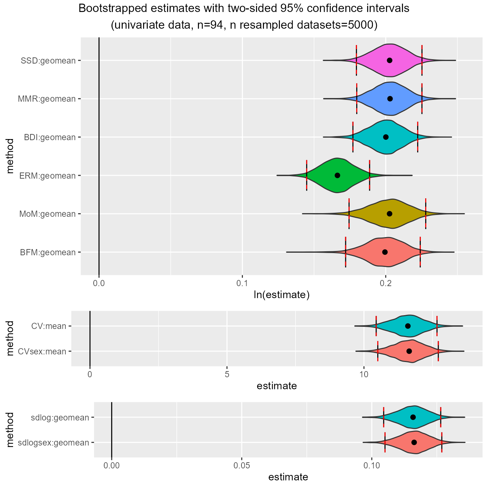
We can now take a look at the bootstrapped confidence intervals for the other three species samples. Here are humans:
plot(bootsUhom)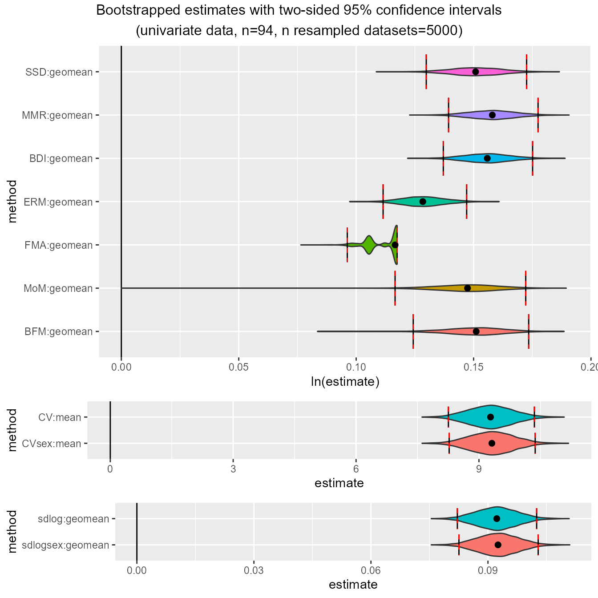
Now chimpanzees:
plot(bootsUpan)And finally, gibbons:
plot(bootsUhyl)These plots illustrate some of the issues to be aware of when using
these methods; e.g., patterns of over- or under-estimation of SSD under
certain conditions and the unusual distributions of finite mixture model
methods (FMA", "MoM", "BFM")
under many conditions. These issues are all discussed in detail in
Gordon (2025a).
Additionally, in cases where bias has been calculated from sample
estimates of SSD or the other methods that include sex, the argument
type can be set to "bias" to plot bootstrapped
distributions and confidence intervals for bias. These plots are useful
in illustrating the degree of systematic bias for various methods
depending on the actual degree of dimorphism. We’ll just take a look at
the two samples with the most and least dimorphism, gorillas and
gibbons.
plot(bootsUgor, type="bias")For ratio-based estimates, most estimators do a pretty good job of
matching actual sample sexual dimorphism in gorillas (confidence
intervals include zero), although "FMA" and
"ERM" underestimate it by quite a bit. However, all
ratio-based estimators overestimate dimorphism in gibbons:
plot(bootsUhyl, type="bias")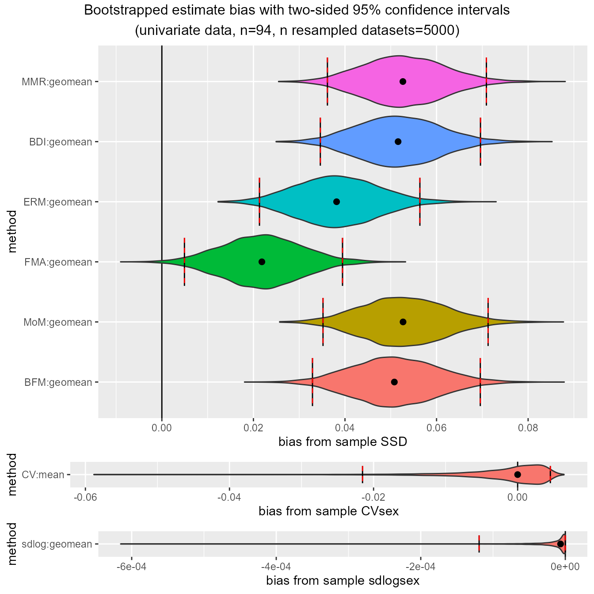
We can also take this opportunity to see how uneven sex ratios can
impact dimorphism estimates. Let’s recalculate a set of confidence
intervals for gorillas. But this time, instead of using the full data
set which has an equal number of females and males, let’s run it for a
subset that includes all 47 females but only 10 males, then look at bias
from sample "SSD".
bootsUgorUnbalanced <- bootdimorph(gor[c(1:47, 71:80), "FHSI", drop=FALSE],
sex=gor$Sex[c(1:47, 71:80)], methsUni=meths, nResamp=nResample)
plot(bootsUgorUnbalanced, type="bias")Looking back at the confidence intervals based on the full, balanced
gorilla sample, we can see that those 95% confidence intervals included
zero bias for all methods except for "ERM" and
"FMA". But in this unbalanced sex sample (about 82%
females), all of the 95% confidence intervals exclude zero bias except
for "BFM", and even in that case the confidence interval is
very large, with the lower confidence interval extending beyond the
lower interval for "MMR", "BDI", and
"FMA" (N.B.: "BFM" does well at
estimating dimorphism in unbalanced samples at large sample sizes
because it explicitly estimates the proportion of each sex present, but
it is a data-hungry model and performs poorly at the smaller sample
sizes typical of most fossil samples). See Gordon (2025a) for a thorough
discussion about the benefits and limitations of these various
estimation techniques.
Confidence intervals for multivariate data sets
We can also bootstrap multivariate estimates of dimorphism. Let’s do it.
Applying bootdimoph() to multivariate samples
Using bootdimorph() with multivariate samples requires
complete sets of observations for every specimen. If
na.rm=TRUE (the default), any specimen that is missing data
will be removed from the analysis. An error is returned if there are
missing data and na.rm=FALSE. Let’s bootstrap confidence
intervals for the gorilla sample using all ten variables in the
apelimbart data set, all univariate methods, and both the
"GMsize" and "GMM" multivariate methods
(N.B.: not only is the use of "TM" discouraged, it
also simply reverts to a univariate estimate of dimorphism in the
template variable when all specimens have data for the template variable
because no estimation for that variable is necessary).
bootsMgor <- bootdimorph(gor[,SSDvars_apelimbart], sex=gor$Sex, methsUni=meths,
methsMulti=c("GMM", "GMsize"), nResamp=nResample)Viewing the resulting object
Now let’s take a look at the resulting object. It has many similarities with the univariate examples, but also some additional information.
bootsMgor
#> dimorphResampledMulti Object
#>
#> Comparative data set:
#> number of specimens: 47 female, 47 male
#> number of variables: 10
#> variable names: FHSI, TPML, TPMAP, TPLAP, HHMaj, HHMin, RHMaj, RHMin, RDAP, RDML
#> SSD estimate methods (univariate):
#> SSD, MMR, BDI, ERM, FMA, MoM, BFM, CV, CVsex, sdlog, sdlogsex
#> SSD estimate methods (multivariate):
#> GMsize, GMM
#> Centering algorithms:
#> geometric mean, arithmetic mean
#> Multivariate sampling with complete or missing data:
#> complete
#> Number of unique combinations of univariate method, multivariate method,
#> centering algorithm, and complete or missing data structure: 18
#>
#> Resampling data structure:
#> type of resampling: Monte Carlo
#> number of resampled data sets: 5000
#> number of individuals in each resampled data set: 94
#> proportion of missing data in resampling structure: 0
#> resampling procedure: bootstrap
#> subsamples sampled WITH replacement
#> confidence intervals: two-sided, 95% confidence level
#> other resampling parameters:
#> sex data present
#> ratio variables (if present): natural log of ratio
#> matchvars = FALSE
#> na.rm = TRUE
#>
#> Confidence intervals for estimates:
#> methodUni methodMulti center datastructure proportionNA lower_lim
#> 1 SSD GMsize geomean complete 0 0.2084850
#> 2 SSD GMM geomean complete 0 0.2084850
#> 3 MMR GMsize geomean complete 0 0.2081337
#> 4 MMR GMM geomean complete 0 0.2099397
#> 5 BDI GMsize geomean complete 0 0.1991350
#> 6 BDI GMM geomean complete 0 0.2049715
#> 7 ERM GMsize geomean complete 0 0.1689682
#> 8 ERM GMM geomean complete 0 0.1703679
#> 9 FMA GMsize geomean complete 0 0.1019914
#> 10 FMA GMM geomean complete 0 0.1265210
#> 11 MoM GMsize geomean complete 0 0.2079482
#> 12 MoM GMM geomean complete 0 0.1954272
#> 13 BFM GMsize geomean complete 0 0.2074400
#> 14 BFM GMM geomean complete 0 0.2044040
#> 15 CV GMsize mean complete 0 11.3167618
#> 16 CVsex GMsize mean complete 0 11.3840019
#> 17 sdlog GMsize geomean complete 0 0.1134311
#> 18 sdlogsex GMsize geomean complete 0 0.1141081
#> upper_lim
#> 1 0.2457518
#> 2 0.2457518
#> 3 0.2455912
#> 4 0.2463640
#> 5 0.2376113
#> 6 0.2413813
#> 7 0.2149604
#> 8 0.2075787
#> 9 0.1106578
#> 10 0.1403489
#> 11 0.2487895
#> 12 0.2454951
#> 13 0.2455443
#> 14 0.2451287
#> 15 13.0268716
#> 16 13.0431259
#> 17 0.1304401
#> 18 0.1310351
#>
#> Confidence intervals for bias of estimates from sample SSD, CVsex, or sdlogsex:
#> methodUni methodMulti center datastructure proportionNA lower_lim
#> 1 MMR GMsize geomean complete 0 -0.002211789
#> 2 MMR GMM geomean complete 0 -0.002465676
#> 3 BDI GMsize geomean complete 0 -0.020827670
#> 4 BDI GMM geomean complete 0 -0.013628009
#> 5 ERM GMsize geomean complete 0 -0.046912314
#> 6 ERM GMM geomean complete 0 -0.046525349
#> 7 FMA GMsize geomean complete 0 -0.137043889
#> 8 FMA GMM geomean complete 0 -0.110318964
#> 9 MoM GMsize geomean complete 0 -0.007488963
#> 10 MoM GMM geomean complete 0 -0.023224699
#> 11 BFM GMsize geomean complete 0 -0.001508778
#> 12 BFM GMM geomean complete 0 -0.007148997
#> 13 CV GMsize mean complete 0 -0.481004727
#> 14 sdlog GMsize geomean complete 0 -0.002765170
#> upper_lim
#> 1 0.000000e+00
#> 2 3.004033e-03
#> 3 -3.430143e-03
#> 4 5.267315e-04
#> 5 -2.436725e-02
#> 6 -3.357533e-02
#> 7 -1.009368e-01
#> 8 -7.561790e-02
#> 9 5.647615e-03
#> 10 4.538316e-03
#> 11 -4.367599e-05
#> 12 8.833804e-03
#> 13 9.807039e-02
#> 14 0.000000e+00Just as we saw above, it reports the number of specimens, the number
of variables and their names, and the univariate methods and centering
algorithms. It also reports the multivariate methods used and notes
whether multivariate sampling used complete or missing data. This will
always be “complete” for bootdimorph(), but as we’ll see
later, SSDtest() can be based on complete or missing data
patterns. In addition, the number of unique combinations of univariate
methods, multivariate methods, centering algorithms, and complete or
missing data structures is reported. A new piece of information is also
reported for the resampling data structure: the proportion of missing
data in that structure. This will always be zero for
bootdimorph(), but not necessarily for
SSDtest().
The tables giving the confidence limits are much the same as those
for univariate estimates, although they now include the additional
information about multivariate method, data structure, and proportion of
missing data. Just like in the univariate case, we can use
confint() to pull out those data frames.
Structure of the object
In the multivariate case, bootdimorph() produces an
object of class dimorphResampledMulti. The object structure
is essentially the same as in the univariate case, extended slightly to
capture information about the multivariate methods and record the
original multivariate data set.
Plotting
Just as we saw with univariate bootstrapped confidence intervals,
visualizing the bootstrapped distributions is straightforward using
plot().
plot(bootsMgor)And just like in the univariate examples, we can also exclude
specified univariate methods using exclude.
plot(bootsMgor, exclude="FMA")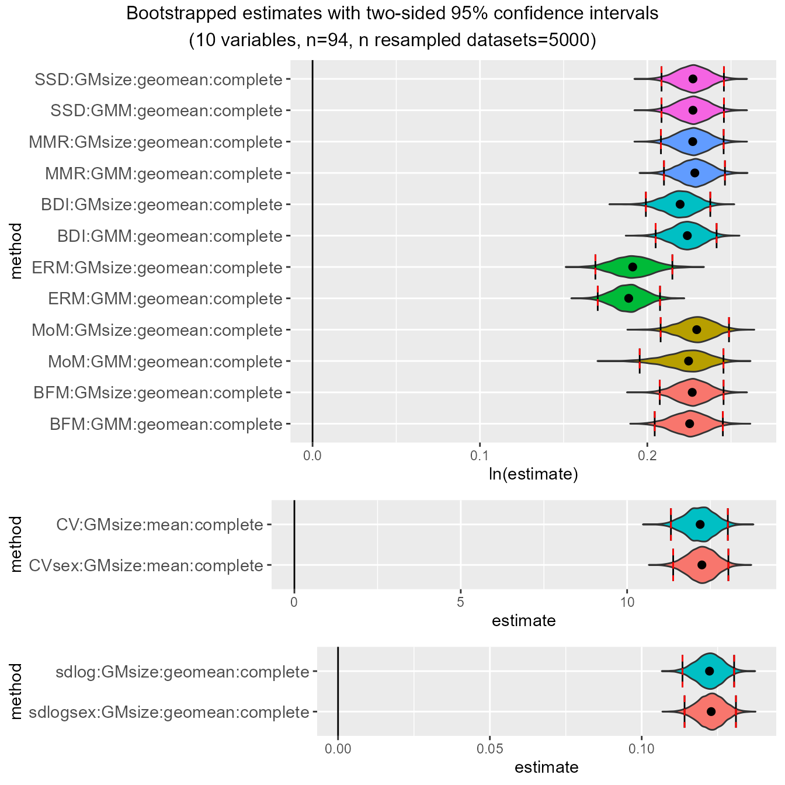
We can also exclude multivariate methods from the plot using
excludeMulti.
plot(bootsMgor, exclude="FMA", excludeMulti="GMsize")
And we can also plot bias from sex-based sample values, just like in the univariate example.
plot(bootsMgor, type="bias")Confidence intervals for data sets with missing data?
Nope.
The function bootdimorph() won’t allow users to generate
bootstrapped confidence intervals for estimates based on missing data.
That said, resampleSSD(), the resampling function that
bootdimorph() and SSDtest() both rely on, has
great flexibility in how resampling procedures proceed. It is possible
to use that function to set up a bootstrap based on missing data, but
interpreting those confidence intervals would be quite tricky. When
there is missing data, any estimates (and confidence intervals around
them) are only meaningful in comparison to estimates from other samples
in which the data set has that same particular pattern of
missingness.
So with samples that have missing data, it’s most appropriate to run
a significance test for pairs of taxa where all taxon data sets are
resampled to the same sample size and missing data pattern.
SSDtest() does exactly that.
Running signficance tests with SSDtest()
The function SSDtest() allows users to run a variety of
resampling-based significance tests as commonly used in the
paleoanthropological literature. In particular, it allows for resampling
tests based on exact or Monte Carlo resampling techniques, sampling with
or without replacement, and using either univariate or multivariate
samples which may or may not have missing data.
Univariate estimates
Significance tests comparing dimorphism for a single variable in a
fossil sample to dimorphism in extant comparative taxa typically
resample the extant samples down to the sample size of the fossil sample
(either with or without replacement), then compare the point estimate
calculated for the fossil sample to resampled distributions for the
comparative samples to generate one- or two-sided p-values (see studies
cited in Gordon 2025a for examples). Those procedures (and more) are
implemented in SSDtest().
Using SSDtest() with one fossil sample
(univariate)
To run the procedures described above, SSDtest()
requires the data sets as two separate arguments: fossil,
which is a list where each element is a data set for a single fossil
taxon (this will only have one element in this case), and
comp, a list where each element is a data set for a single
comparative taxon. Names for each list element are not required, but
providing them will make interpreting the results easier (those names
will be passed to the resulting object and will show up in summaries and
plots). Similarly, sex information is provided as separate lists for the
arguments fossilsex (which will typically be
NULL) and compsex.
Note that the following univariate example resamples from comparative
samples without replacement, which is the default
behavior of SSDtest(). However, if users prefer to sample
with replacement they can simply set the argument
replace equal to TRUE. Any fossil specimen
without data for the variable is removed from the sample (this happens
regardless of the value of na.rm).
test_fossil_uni <- SSDtest(
fossil=list("A. afarensis"=GordonAJBA[GordonAJBA$Species=="A. afarensis", "FEMHEAD", drop=FALSE]),
comp=list("G. gorilla"=GordonAJBA[GordonAJBA$Species=="Gorilla gorilla", "FEMHEAD", drop=FALSE],
"H. sapiens"=GordonAJBA[GordonAJBA$Species=="Homo sapiens", "FEMHEAD", drop=FALSE],
"P. troglodytes"=GordonAJBA[GordonAJBA$Species=="Pan troglodytes", "FEMHEAD", drop=FALSE]),
fossilsex=NULL,
compsex=list("G. gorilla"=GordonAJBA[GordonAJBA$Species=="Gorilla gorilla", "Sex"],
"H. sapiens"=GordonAJBA[GordonAJBA$Species=="Homo sapiens", "Sex"],
"P. troglodytes"=GordonAJBA[GordonAJBA$Species=="Pan troglodytes", "Sex"]),
methsUni=c("SSD", "MMR", "BDI"),
nResamp=nResample)
#> Warning in dimorph::getsampleaddresses(comparative = comp[[i]], struc = struct,
#> : The number of possible combinations (194580) exceeds the user-specified
#> limit. Monte Carlo sampling will be used.
#> Warning in dimorph::getsampleaddresses(comparative = comp[[i]], struc = struct,
#> : The number of possible combinations (194580) exceeds the user-specified
#> limit. Monte Carlo sampling will be used.
#> Warning in dimorph::getsampleaddresses(comparative = comp[[i]], struc = struct,
#> : The number of possible combinations (194580) exceeds the user-specified
#> limit. Monte Carlo sampling will be used.
#> Warning in SSDtest(fossil = list(`A. afarensis` = GordonAJBA[GordonAJBA$Species == : The following comparisons contain NAs that were
#> dropped in the calculation of p-values:
#> SSD:geomean: G. gorilla - H. sapiens
#> SSD:geomean: G. gorilla - P. troglodytes
#> SSD:geomean: H. sapiens - P. troglodytes
#> SSD:geomean: H. sapiens - G. gorilla
#> SSD:geomean: P. troglodytes - G. gorilla
#> SSD:geomean: P. troglodytes - H. sapiensBy default, SSDtest() will attempt to perform exact
resampling for all of the comparative samples (argument
exactcomp = TRUE). If the number of unique combinations of
resampled data sets for a comparative taxon exceeds limit
(which defaults to 50,000), then Monte Carlo resampling will be used
instead with a number of iterations equal to nResamp (users
can also specify Monte Carlo sampling by setting
exactcomp = FALSE). The first set of warnings reported
above tell the user that sampling was switched to Monte Carlo for all
three comparative samples.
Also, because the fossil sample size is so small, sometimes when a
comparative sample is downsampled to the fossil sample size there is
only one sex present. In those cases "SSD",
"CVsex", and "sdlogsex" can’t be calculated
those methods require both sexes to be present in a sample in order to
be calculated. In any scenario where NAs are produced in at least one
iteration for a particular method in a particular sample, a warning is
generated to let the user know that p-values involving those
sample/method combinations drop the NA estimates before calculating
p-values. Users may or may not find those p-values acceptable. In any
event, tests using methods that require sex information for all
specimens typically won’t be usable for fossil samples since those
samples almost always lack sex information.
Viewing the resulting object
Now let’s take a look at the output.
test_fossil_uni
#> SSDtest Object
#>
#> Comparative data set:
#> sample n female n male n unspecified
#> A. afarensis 0 0 4
#> G. gorilla 24 24 0
#> H. sapiens 24 24 0
#> P. troglodytes 24 24 0
#> number of variables: 1
#> variable names: FEMHEAD
#> SSD estimate methods (univariate):
#> SSD, MMR, BDI
#> Centering algorithms:
#> geometric mean
#> Number of unique combinations of univariate method and centering algorithm: 3
#>
#> Resampling data structure:
#> sample n resampled data sets resampling type sampling
#> A. afarensis 1 exact without replacement
#> G. gorilla 5000 Monte Carlo without replacement
#> H. sapiens 5000 Monte Carlo without replacement
#> P. troglodytes 5000 Monte Carlo without replacement
#> number of individuals in each resampled data set: 4
#> other resampling parameters:
#> ratio variables (if present): natural log of ratio
#> matchvars = FALSE
#> na.rm = TRUE
#>
#> Median resampled estimates for each combination of methods:
#> methodUni center A. afarensis G. gorilla H. sapiens P. troglodytes
#> 1 SSD geomean NA 0.2125 0.1268 0.0459
#> 2 MMR geomean 0.2393 0.1991 0.1261 0.0881
#> 3 BDI geomean 0.2322 0.1723 0.1114 0.0789
#>
#> p-values (one-sided; null: first sample less or equally dimorphic as second sample):
#> SSD:geomean MMR:geomean BDI:geomean
#> A. afarensis - G. gorilla NA 0.2680 0.1114
#> A. afarensis - H. sapiens NA 0.0306 0.0064
#> A. afarensis - P. troglodytes NA 0.0068 0.0000
#> G. gorilla - H. sapiens 0.1422 0.2186 0.2139
#> G. gorilla - P. troglodytes 0.0276 0.1135 0.1069
#> H. sapiens - P. troglodytes 0.1652 0.2973 0.2904
#> G. gorilla - A. afarensis NA 0.7320 0.8886
#> H. sapiens - A. afarensis NA 0.9694 0.9936
#> P. troglodytes - A. afarensis NA 0.9932 1.0000
#> H. sapiens - G. gorilla 0.8578 0.7814 0.7861
#> P. troglodytes - G. gorilla 0.9724 0.8865 0.8931
#> P. troglodytes - H. sapiens 0.8348 0.7027 0.7096
#>
#> p-values (two-sided):
#> SSD:geomean MMR:geomean BDI:geomean
#> A. afarensis - G. gorilla NA 0.5290 0.2472
#> A. afarensis - H. sapiens NA 0.0328 0.0064
#> A. afarensis - P. troglodytes NA 0.0068 0.0000
#> G. gorilla - H. sapiens 0.2853 0.4426 0.4342
#> G. gorilla - P. troglodytes 0.0492 0.2157 0.1957
#> H. sapiens - P. troglodytes 0.3310 0.5983 0.5857
#>
#> Warning: The following comparisons contain NAs that were
#> dropped in the calculation of p-values:
#> SSD:geomean: G. gorilla - H. sapiens
#> SSD:geomean: G. gorilla - P. troglodytes
#> SSD:geomean: H. sapiens - P. troglodytes
#> SSD:geomean: H. sapiens - G. gorilla
#> SSD:geomean: P. troglodytes - G. gorilla
#> SSD:geomean: P. troglodytes - H. sapiensTo begin with, we’ve got information about the data set. First, the
sample size broken out by sex for each sample, then the number of
variables and the names of those variables are provided (if those names
were in the data set given to SSDtest()). There’s also
information about the estimation method(s) used and the centering
algorithm(s) used, along with number of unique combinations of methods
and centering algorithms.
Next there’s information about the resampling data structure, with
the number of resampled datasets given for each sample and the type of
sampling used. Because this procedure downsamples all samples to the
size of the fossil sample without replacement, there is only one
resampled fossil data set (which is the original fossil data set). Even
when replace=TRUE, only the comparative data sets are
sampled with replacement, not the fossil sample (refer to the help page
for SSDtest() for information about resampling both the
comparative and fossil samples). Also reported is the number of
individuals in each resampled data set, as well as any other information
about the resampling procedure.
The next section of printed information provides the median resampled
value for each sample and each method. Alternatively, the mean resampled
value can be reported by using
print(test_fossil_uni, central="mean").
The remainder of the reported information relates to calculated p-values for all pairwise comparisons of two samples. First one-sided p-values are reported for both directions, then two-sided p-values (see Gordon 2025a for details of their calculation). If any p-values are based on sets of estimates that include NAs, a warning is given that identifies the p-values for which that is the case.
Structure of the object
SSDtest() produces an object of class
SSDtest. This is a more complex object than the
dimorphResampledUni object produced by
bootdimorph() applied to univariate data. In fact, the
SSDtest object contains multiple
dimorphResampledUni objects, one for each taxon sample, as
well as other information. Let’s take a look.
names(test_fossil_uni)
#> [1] "estimates" "methcombos" "pvalues"The SSDtest object is a list containing three
components: estimates, methcombos, and
pvalues. methcombos is a data frame containing
means and medians for each taxon sample for each combination of methods,
and pvalues is a list containing two matrices of one-sided
and two-sided p-values.
We can use a couple of functions to extract data frames from the
methcombos and pvalues elements of a
SSDtest object: centers() and
pvals(). centers() provides a data frame with
mean and median resampled values for every sample for each method
combination.
centers(test_fossil_uni)
#> methodUni center median.A. afarensis mean.A. afarensis median.G. gorilla
#> 1 SSD geomean NA NA 0.2124633
#> 2 MMR geomean 0.2392566 0.2392566 0.1990785
#> 3 BDI geomean 0.2322377 0.2322377 0.1722730
#> mean.G. gorilla median.H. sapiens mean.H. sapiens median.P. troglodytes
#> 1 0.2140611 0.1267858 0.1279168 0.04590631
#> 2 0.1962144 0.1260593 0.1297642 0.08808577
#> 3 0.1684665 0.1114163 0.1138409 0.07886737
#> mean.P. troglodytes
#> 1 0.04885744
#> 2 0.09533623
#> 3 0.08393418pvals() pulls out one of the p-value data frames, and
the argument alternative has two options:
"two.sided" (the default) and "one.sided".
pvals(test_fossil_uni)
#> Warning in pvals(test_fossil_uni): The following comparisons contain NAs that were
#> dropped in the calculation of p-values:
#> SSD:geomean: G. gorilla - H. sapiens
#> SSD:geomean: G. gorilla - P. troglodytes
#> SSD:geomean: H. sapiens - P. troglodytes
#> SSD:geomean: H. sapiens - G. gorilla
#> SSD:geomean: P. troglodytes - G. gorilla
#> SSD:geomean: P. troglodytes - H. sapiens
#> SSD:geomean MMR:geomean BDI:geomean
#> H0: A. afarensis = G. gorilla NA 0.5290000 0.2472000
#> H0: A. afarensis = H. sapiens NA 0.0328000 0.0064000
#> H0: A. afarensis = P. troglodytes NA 0.0068000 0.0000000
#> H0: G. gorilla = H. sapiens 0.28530542 0.4425884 0.4342208
#> H0: G. gorilla = P. troglodytes 0.04922726 0.2156509 0.1956675
#> H0: H. sapiens = P. troglodytes 0.33099415 0.5982979 0.5857246pvals() returns the data frame, but it also generates
the same warning we saw earlier. We can suppress that warning if we want
to.
suppressWarnings(pvals(test_fossil_uni, alternative="one.sided"))
#> SSD:geomean MMR:geomean BDI:geomean
#> H0: A. afarensis <= G. gorilla NA 0.2680000 0.1114000
#> H0: A. afarensis <= H. sapiens NA 0.0306000 0.0064000
#> H0: A. afarensis <= P. troglodytes NA 0.0068000 0.0000000
#> H0: G. gorilla <= H. sapiens 0.14221337 0.2186031 0.2139227
#> H0: G. gorilla <= P. troglodytes 0.02757475 0.1135224 0.1068574
#> H0: H. sapiens <= P. troglodytes 0.16519551 0.2973175 0.2903688
#> H0: G. gorilla <= A. afarensis NA 0.7320000 0.8886000
#> H0: H. sapiens <= A. afarensis NA 0.9694000 0.9936000
#> H0: P. troglodytes <= A. afarensis NA 0.9932000 1.0000000
#> H0: H. sapiens <= G. gorilla 0.85778663 0.7813969 0.7860773
#> H0: P. troglodytes <= G. gorilla 0.97242525 0.8864776 0.8931426
#> H0: P. troglodytes <= H. sapiens 0.83480449 0.7026825 0.7096312The remaining element of a SSDtest object,
estimates, is a list containing elements corresponding to
each taxon sample:
names(test_fossil_uni$estimates)
#> [1] "A. afarensis" "G. gorilla" "H. sapiens" "P. troglodytes"These list components are all objects of class
dimorphResampledUni, which is the same class produced by
bootdimorph() applied to univariate datasets (both
bootdimorph() and SSDtest() call on
resampleSSD(), which generates these objects). Just like
the objects produced by bootdimorph(), these objects
contain all of the resampled estimates; a summary of the information
contained in them can be generated by typing their names. Here’s that
information for the fossil sample:
test_fossil_uni$estimates[["A. afarensis"]]
#> dimorphResampledUni Object
#>
#> Comparative data set:
#> number of specimens: 4 (sex unspecified)
#> number of variables: 1
#> variable name: FEMHEAD
#> SSD estimate methods (univariate):
#> MMR, BDI
#> Centering algorithms:
#> geometric mean
#> Number of unique combinations of univariate method and centering algorithm: 2
#>
#> Resampling data structure:
#> type of resampling: exact
#> number of resampled data sets: 1
#> number of individuals in each resampled data set: 4
#> subsamples sampled WITHOUT replacement
#> other resampling parameters:
#> sex data absent
#> ratio variables (if present): natural log of ratio
#> matchvars = FALSE
#> na.rm = TRUEAnd here’s the information for one of the comparative samples:
test_fossil_uni$estimates[["G. gorilla"]]
#> dimorphResampledUni Object
#>
#> Comparative data set:
#> number of specimens: 24 female, 24 male
#> number of variables: 1
#> variable name: FEMHEAD
#> SSD estimate methods (univariate):
#> SSD, MMR, BDI
#> Centering algorithms:
#> geometric mean
#> Number of unique combinations of univariate method and centering algorithm: 3
#>
#> Resampling data structure:
#> type of resampling: Monte Carlo
#> number of resampled data sets: 5000
#> number of individuals in each resampled data set: 4
#> subsamples sampled WITHOUT replacement
#> other resampling parameters:
#> sex data present
#> ratio variables (if present): natural log of ratio
#> matchvars = FALSE
#> na.rm = TRUEBecause these parts of the SSDtest object are
dimorphResampledUni objects just like the output of
bootdimorph(), we can plot them if we want to:
plot(test_fossil_uni$estimates[["G. gorilla"]])Notice that no confidence intervals are drawn - that’s because this
object doesn’t have any. Now let’s look into plotting the whole
SSDtest object.
Plotting
There are a number of different ways the information in a
SSDtest object can be visualized (type
help(plot.SSDtest) for detailed information). Simply using
plot() with no other arguments will plot histograms of the
resampled distributions for all taxon samples for the first combination
of univariate and multivariate methods.
plot(test_fossil_uni)Note that the fossil sample is not included here. That’s because the
first method combination is plotted by default; in this case, that’s
"SSD" using the "geomean" centering algorithm,
and that can’t be calculated for samples without sex information.
We can change what’s plotted by using the argument est
to denote the estimate method combination we want. If we refer back to
the printed output of test_fossil_uni above, we see that
the second method combination generates resampled values of
"MMR" using the "geomean" centering algorithm,
and it includes the observed value for the fossil sample. Let’s plot
that.
plot(test_fossil_uni, est=2) # plots second method (MMR)The fossil sample is included as a vertical line because it’s a single point estimate and is not resampled.
We also might want to adjust the colors for each resampled
distribution. We can do that by using the argument
groupcols, specifying a vector of colors with names for
each element corresponding to the taxon sample names.
speciescolors <- c("A. afarensis"="#352A87", "A. africanus"="#F9FB0E", "G. gorilla"="#EABA4B",
"H. sapiens"="#09A9C0", "P. troglodytes"="#78BE7C")
plot(test_fossil_uni, est=2, groupcols=speciescolors) # change the colorsWe might further want to visualize the resampled difference in
estimates for any given pair of samples. We can do this by setting the
argument type to "diff" (the default is
"est"). By default, this will produce histograms for all
pairwise combinations of samples, which are generated by calculating the
difference between all possible pairs of one value from each of the two
resampled distributions. That calculation is performed at the time of
plotting so these plots may take a long time to generate if a large
number of iterations was used by SSDtest().
By default, these histograms are plotted in a single grid of plots.
However, we’ll plot them individually here to keep them legible using
the arguments gridplot and useradvance.
plot(test_fossil_uni, est=2, type="diff", # plots differences for all pairs of samples
gridplot=FALSE, useradvance=FALSE) # prints each plot separately without waiting for user input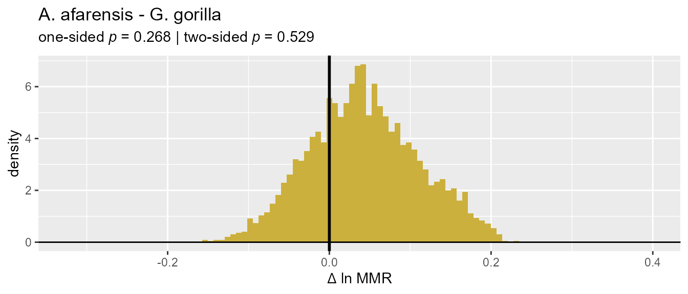
Alternatively, we might want to plot the difference for a single pair
of samples. In that case, a vector of two integers specifying the
samples to include is passed to the argument diffs. These
integers are the order in which the samples were given to
SSDtest(), and are the order that the samples appear in
when the SSDtest object is printed.
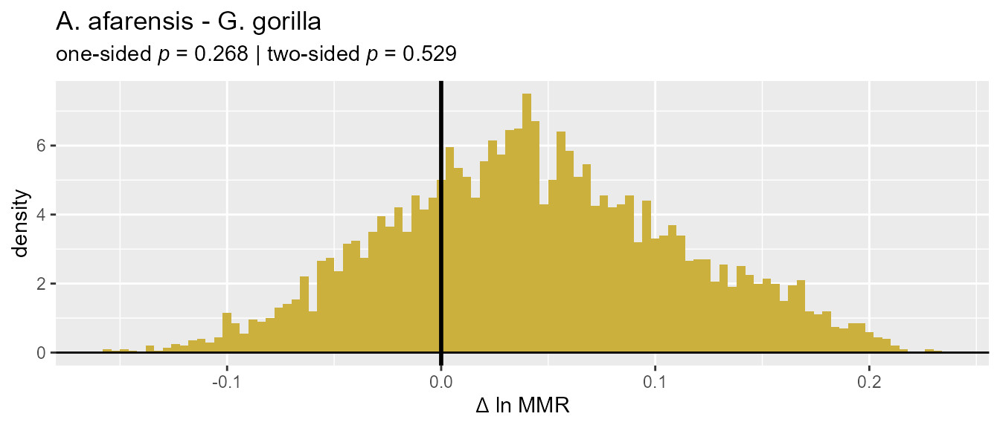
Using SSDtest() with multiple fossil samples
(univariate)
We can also include more than one fossil sample in univariate tests,
in which case any fossil samples larger than the smallest fossil sample
will also be resampled down to the sample size of the smallest fossil
sample. Because we know that the number of unique combinations of
resampled data sets for our comparative samples far exceeds
limit, we can specify that we want to use Monte Carlo
resampling for them by setting exactcomp=FALSE. By default,
SSDtest() will also attempt to perform exact resampling for
all of the fossil samples (argument exactfossil = TRUE),
switching to Monte Carlo resampling if the number of unique combinations
of resampled data sets for a fossil taxon exceeds
limit.
test_2fossil_uni <- SSDtest(
fossil=list("A. afarensis"=GordonAJBA[GordonAJBA$Species=="A. afarensis", "FEMHEAD"],
"A. africanus"=GordonAJBA[GordonAJBA$Species=="A. africanus", "FEMHEAD"]),
comp=list("G. gorilla"=GordonAJBA[GordonAJBA$Species=="Gorilla gorilla", "FEMHEAD"],
"H. sapiens"=GordonAJBA[GordonAJBA$Species=="Homo sapiens", "FEMHEAD"],
"P. troglodytes"=GordonAJBA[GordonAJBA$Species=="Pan troglodytes", "FEMHEAD"]),
fossilsex=NULL,
compsex=list("G. gorilla"=GordonAJBA[GordonAJBA$Species=="Gorilla gorilla", "Sex"],
"H. sapiens"=GordonAJBA[GordonAJBA$Species=="Homo sapiens", "Sex"],
"P. troglodytes"=GordonAJBA[GordonAJBA$Species=="Pan troglodytes", "Sex"]),
methsUni=c("MMR", "BDI"),
exactcomp=FALSE,
nResamp=nResample)As with the one fossil sample case we can print the output.
test_2fossil_uni
#> SSDtest Object
#>
#> Comparative data set:
#> sample n female n male n unspecified
#> A. afarensis 0 0 4
#> A. africanus 0 0 13
#> G. gorilla 24 24 0
#> H. sapiens 24 24 0
#> P. troglodytes 24 24 0
#> number of variables: 1
#> variable names: VAR
#> SSD estimate methods (univariate):
#> MMR, BDI
#> Centering algorithms:
#> geometric mean
#> Number of unique combinations of univariate method and centering algorithm: 2
#>
#> Resampling data structure:
#> sample n resampled data sets resampling type sampling
#> A. afarensis 1 exact without replacement
#> A. africanus 715 exact without replacement
#> G. gorilla 5000 Monte Carlo without replacement
#> H. sapiens 5000 Monte Carlo without replacement
#> P. troglodytes 5000 Monte Carlo without replacement
#> number of individuals in each resampled data set: 4
#> other resampling parameters:
#> ratio variables (if present): natural log of ratio
#> matchvars = FALSE
#> na.rm = TRUE
#>
#> Median resampled estimates for each combination of methods:
#> methodUni center A. afarensis A. africanus G. gorilla H. sapiens
#> 1 MMR geomean 0.2393 0.1179 0.1978 0.1249
#> 2 BDI geomean 0.2322 0.1063 0.1717 0.1108
#> P. troglodytes
#> 1 0.0895
#> 2 0.0803
#>
#> p-values (one-sided; null: first sample less or equally dimorphic as second sample):
#> MMR:geomean BDI:geomean
#> A. afarensis - A. africanus 0.0112 0.0000
#> A. afarensis - G. gorilla 0.2700 0.1126
#> A. afarensis - H. sapiens 0.0294 0.0070
#> A. afarensis - P. troglodytes 0.0072 0.0004
#> A. africanus - G. gorilla 0.8036 0.7983
#> A. africanus - H. sapiens 0.5271 0.5184
#> A. africanus - P. troglodytes 0.3290 0.3251
#> G. gorilla - H. sapiens 0.2193 0.2141
#> G. gorilla - P. troglodytes 0.1191 0.1131
#> H. sapiens - P. troglodytes 0.3089 0.3055
#> A. africanus - A. afarensis 0.9888 1.0000
#> G. gorilla - A. afarensis 0.7300 0.8874
#> H. sapiens - A. afarensis 0.9706 0.9930
#> P. troglodytes - A. afarensis 0.9928 0.9996
#> G. gorilla - A. africanus 0.1964 0.2017
#> H. sapiens - A. africanus 0.4729 0.4816
#> P. troglodytes - A. africanus 0.6710 0.6749
#> H. sapiens - G. gorilla 0.7807 0.7859
#> P. troglodytes - G. gorilla 0.8809 0.8869
#> P. troglodytes - H. sapiens 0.6911 0.6945
#>
#> p-values (two-sided):
#> MMR:geomean BDI:geomean
#> A. afarensis - A. africanus 0.0112 0.0000
#> A. afarensis - G. gorilla 0.5282 0.2462
#> A. afarensis - H. sapiens 0.0310 0.0070
#> A. afarensis - P. troglodytes 0.0072 0.0004
#> A. africanus - G. gorilla 0.3943 0.4076
#> A. africanus - H. sapiens 0.9367 0.9619
#> A. africanus - P. troglodytes 0.6724 0.6568
#> G. gorilla - H. sapiens 0.4450 0.4355
#> G. gorilla - P. troglodytes 0.2270 0.2094
#> H. sapiens - P. troglodytes 0.6222 0.6157We can also plot the output in the same way as we did earlier.
plot(test_2fossil_uni, est=1, groupcols=speciescolors)In this case we have a resampled distribution for one of the fossil
samples in addition to all of the comparative samples. If we want to
better distinguish overlapping distributions, we can give a vector of
one or more integer values to the argument invert. This
will flip the histograms of the corresponding sample(s) in the plot (and
move those sample names to the bottom of the legend).
plot(test_2fossil_uni, invert=2, est=1, groupcols=speciescolors)And just as we did earlier, we can plot histograms for the difference in estimates for pairs of samples.
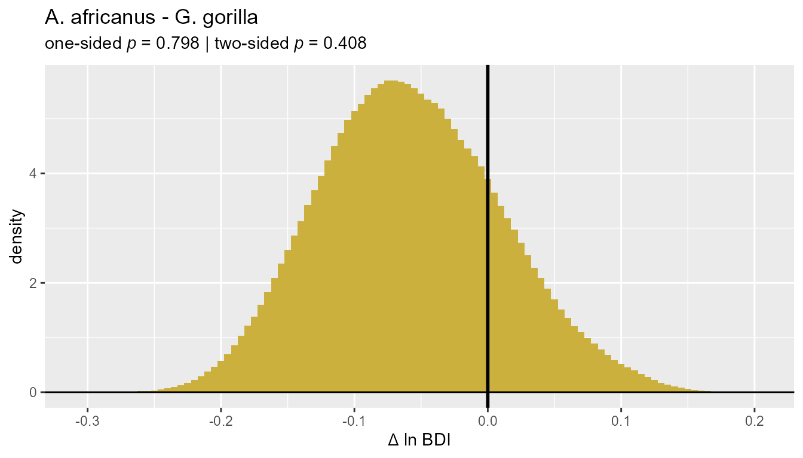
Multivariate estimates
Finally, we can test for difference in multivariate dimorphism between one or more fossil samples with missing data and one or more complete comparative data sets. The procedures described below follow those outlined in Gordon et al. (2008), Gordon (2025a), and Gordon (2025b). Please refer to those articles for more specific details.
To begin with, let’s specify a vector containing the names of all of the variables we’ll include in our data sets.
SSDvars <- c("HUMHEAD", "ELBOW0.5", "RADTV", "FEMHEAD",
"FEMSHAFT0.5", "DISTFEM0.5", "PROXTIB0.5", "DISTTIB0.5")Now let’s run some tests.
Using SSDtest() with missing data in one fossil sample
(multivariate)
First, we’ll run SSDtest() for the situation where we
have a single fossil sample with missing data that we’d like to compare
to one or more comparative samples with no missing data. As in the
univariate case, SSDtest() attempts to perform exact
resampling for all of the comparative samples by default (argument
exactcomp = TRUE) but shifts to Monte Carlo resampling if
the number of unique resampled data sets exceeds limit.
We’ll set exactcomp = FALSE here to just use Monte Carlo
sampling from the outset.
The only multivariate method we’ll run here is "GMM".
Remember, the "GMM" approach (and "GMsize",
which can’t be used with incomplete data) generates estimates of
dimorphism for an overall size variable that is the geometric mean of
all of the included variables. These variables should all be of the same
dimensionality (linear, area, volume) and measured in the same units. If
we wanted to, we could also use the "TM" approach. Remember
that "TM" estimates dimorphism for a single variable (the
template variable) rather than an overall measure of size. Also,
remember that it’s highly flawed - don’t use it! (But if you
really, really want to, the function will allow you to do it. Just
remember that "GMM" and "TM" are estimating
dimorphism for different size variables.)
test_fossil_multi <- SSDtest(
fossil=list("A. afarensis"=GordonAJBA[GordonAJBA$Species=="A. afarensis", SSDvars]),
comp=list("G. gorilla"=GordonAJBA[GordonAJBA$Species=="Gorilla gorilla", SSDvars],
"H. sapiens"=GordonAJBA[GordonAJBA$Species=="Homo sapiens", SSDvars],
"P. troglodytes"=GordonAJBA[GordonAJBA$Species=="Pan troglodytes", SSDvars]),
fossilsex=NULL,
compsex=list("G. gorilla"=GordonAJBA[GordonAJBA$Species=="Gorilla gorilla", "Sex"],
"H. sapiens"=GordonAJBA[GordonAJBA$Species=="Homo sapiens", "Sex"],
"P. troglodytes"=GordonAJBA[GordonAJBA$Species=="Pan troglodytes", "Sex"]),
methsUni=c("MMR", "BDI"),
methsMulti=c("GMM"),
exactcomp = FALSE,
datastruc="both",
nResamp=nResample)Above we’ve specified that we’d like to estimate dimorphism using the
"GMM" multivariate method in conjunction with both the
"MMR" and "BDI" univariate methods. In
addition, the argument datastruc is set to
"both". The other options are "complete" and
"missing". When set to "complete",
SSDtest() downsamples the comparative samples to the size
of the fossil sample in every iteration of the resampling procedure,
then estimates dimorphism in the comparative samples using all of the
resampled data (i.e., not mimicking the missing data structure of the
fossil sample). Dimorphism is not estimated for the fossil sample when
datastruc="complete". When it is "missing",
the pattern of missing data in the fossil sample is imposed on the
resampled comparative datasets in each iteration (see Gordon et al.,
2008 and Gordon, 2025a for more detail). Dimorphism is also estimated
for the fossil sample as a single point estimate. When
datastruc="both", SSDtest() generates both
sets of estimates (and analyzes them separately).
Viewing the resulting object
Now let’s take a look at the resulting object. It will look very similar to the object produced in the univariate case with a few additional pieces of information.
test_fossil_multi
#> SSDtest Object
#>
#> Comparative data set:
#> sample n female n male n unspecified
#> A. afarensis 0 0 20
#> G. gorilla 24 24 0
#> H. sapiens 24 24 0
#> P. troglodytes 24 24 0
#> number of variables: 8
#> variable names: HUMHEAD, ELBOW0.5, RADTV, FEMHEAD, FEMSHAFT0.5, DISTFEM0.5, PROXTIB0.5, DISTTIB0.5
#> SSD estimate methods (univariate):
#> MMR, BDI
#> SSD estimate methods (multivariate):
#> GMM
#> Centering algorithms:
#> geometric mean
#> Multivariate sampling with complete or missing data:
#> complete and missing
#> Number of unique combinations of univariate method, multivariate method,
#> centering algorithm, and complete or missing data structure: 4
#>
#> Resampling data structure:
#> sample n resampled data sets resampling type sampling
#> A. afarensis 1 exact without replacement
#> G. gorilla 5000 Monte Carlo without replacement
#> H. sapiens 5000 Monte Carlo without replacement
#> P. troglodytes 5000 Monte Carlo without replacement
#> missing data resampling structure:
#> sampling individuals, then imposing missing data pattern
#> number of individuals in each resampled data set: 20
#> proportion of missing data in resampling structure: 0.806
#> other resampling parameters:
#> ratio variables (if present): natural log of ratio
#> matchvars = FALSE
#> na.rm = TRUE
#>
#> Median resampled estimates for each combination of methods:
#> methodUni methodMulti center datastructure A. afarensis G. gorilla
#> 1 MMR GMM geomean complete NA 0.2299
#> 2 MMR GMM geomean missing 0.2476 0.1882
#> 3 BDI GMM geomean complete NA 0.2135
#> 4 BDI GMM geomean missing 0.2311 0.1648
#> H. sapiens P. troglodytes
#> 1 0.1387 0.1021
#> 2 0.1184 0.0881
#> 3 0.1348 0.1004
#> 4 0.1078 0.0809
#>
#> p-values (one-sided; null: first sample less or equally dimorphic as second sample):
#> MMR:GMM:geomean:complete MMR:GMM:geomean:missing
#> A. afarensis - G. gorilla NA 0.0274
#> A. afarensis - H. sapiens NA 0.0000
#> A. afarensis - P. troglodytes NA 0.0000
#> G. gorilla - H. sapiens 0.0000 0.0299
#> G. gorilla - P. troglodytes 0.0000 0.0030
#> H. sapiens - P. troglodytes 0.0061 0.1486
#> G. gorilla - A. afarensis NA 0.9726
#> H. sapiens - A. afarensis NA 1.0000
#> P. troglodytes - A. afarensis NA 1.0000
#> H. sapiens - G. gorilla 1.0000 0.9701
#> P. troglodytes - G. gorilla 1.0000 0.9970
#> P. troglodytes - H. sapiens 0.9939 0.8514
#> BDI:GMM:geomean:complete BDI:GMM:geomean:missing
#> A. afarensis - G. gorilla NA 0.0080
#> A. afarensis - H. sapiens NA 0.0000
#> A. afarensis - P. troglodytes NA 0.0000
#> G. gorilla - H. sapiens 0.0002 0.0414
#> G. gorilla - P. troglodytes 0.0000 0.0048
#> H. sapiens - P. troglodytes 0.0083 0.1548
#> G. gorilla - A. afarensis NA 0.9920
#> H. sapiens - A. afarensis NA 1.0000
#> P. troglodytes - A. afarensis NA 1.0000
#> H. sapiens - G. gorilla 0.9998 0.9586
#> P. troglodytes - G. gorilla 1.0000 0.9952
#> P. troglodytes - H. sapiens 0.9917 0.8452
#>
#> p-values (two-sided):
#> MMR:GMM:geomean:complete MMR:GMM:geomean:missing
#> A. afarensis - G. gorilla NA 0.0482
#> A. afarensis - H. sapiens NA 0.0000
#> A. afarensis - P. troglodytes NA 0.0000
#> G. gorilla - H. sapiens 0.0000 0.0600
#> G. gorilla - P. troglodytes 0.0000 0.0050
#> H. sapiens - P. troglodytes 0.0113 0.2971
#> BDI:GMM:geomean:complete BDI:GMM:geomean:missing
#> A. afarensis - G. gorilla NA 0.0126
#> A. afarensis - H. sapiens NA 0.0000
#> A. afarensis - P. troglodytes NA 0.0000
#> G. gorilla - H. sapiens 0.0002 0.0838
#> G. gorilla - P. troglodytes 0.0000 0.0088
#> H. sapiens - P. troglodytes 0.0145 0.3096There is some notable additional information beyond what we saw with
a univariate SSDtest object, especially in relation to the
resampling data structure. In that section, the missing data resampling
structure is reported. Here it says, “sampling individuals, then
imposing missing data pattern,” the process described above. In
addition, the proportion of missing data in the fossil sample - and thus
in the resampling structure - is also reported. However, a different
missing data resampling structure will be used when multiple fossil
samples with missing data are included (more on that below).
Structure of the object
The structure of a SSDtest object produced by
multivariate data is essentially the same as that produced by univariate
data. The one difference is that it contains multiple
dimorphResampledMulti objects rather than
dimorphResampledUni objects. As before, we can plot those
objects if we want to.
plot(test_fossil_multi$estimates[["G. gorilla"]])In the above plot we can see the effect on the distributions of
resampled estimates of imposing the missing data structure onto the
comparative sample. Now let’s plot the whole SSDtest
object.
Plotting
Plotting is exactly the same for multivariate significance tests as
it is for the univariate case. Using plot() generates
histograms for the resampled values using the first methods combination
in the SSDtest object.
plot(test_fossil_multi)Note that the x-axis label reports the univariate method, the
multivariate method as a subscript, and whether or not the missing data
structure was imposed in parentheses. This first method combination uses
complete data and does not impose the missing data pattern, so
dimorphism isn’t estimated for the fossil sample in this case. We can
take a look at the resampled distributions using the missing data
structure by changing the estimate that’s plotted (argument
est).
plot(test_fossil_multi, est=2, # plot the 2nd method combination: MMR, GMM, "missing" datastructure
groupcols=speciescolors) # use our previously specified color vectorAs in the univariate case, the distributions of differences in resampled values can also be plotted.
plot(test_fossil_multi, est=2, type="diff",
gridplot=FALSE, useradvance=FALSE)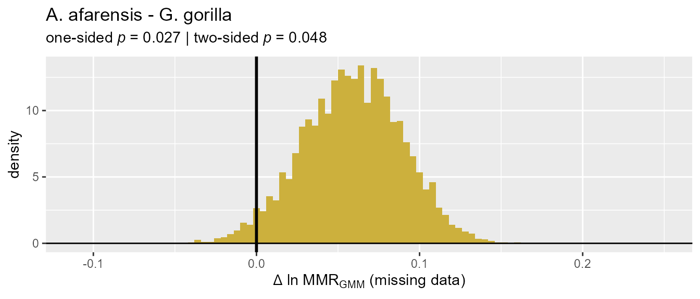
Using SSDtest() with missing data in multiple fossil
samples (multivariate)
Finally, we may want to include two or more fossil samples in the same set of significance tests. In order to allow for direct comparison of estimates across all fossil samples, the same missing data structure must be imposed on all samples, fossil and comparative alike. This follows the procedure developed in Gordon (2025b), which downsamples within each variable to the sample size for that variable in the fossil sample with the smallest sample for that particular variable. See Gordon (2025b) for a more detailed explanation of this procedure.
test_2fossil_multi <- SSDtest(
fossil=list("A. afarensis"=GordonAJBA[GordonAJBA$Species=="A. afarensis", SSDvars],
"A. africanus"=GordonAJBA[GordonAJBA$Species=="A. africanus", SSDvars]),
comp=list("G. gorilla"=GordonAJBA[GordonAJBA$Species=="Gorilla gorilla", SSDvars],
"H. sapiens"=GordonAJBA[GordonAJBA$Species=="Homo sapiens", SSDvars],
"P. troglodytes"=GordonAJBA[GordonAJBA$Species=="Pan troglodytes", SSDvars]),
fossilsex=NULL,
compsex=list("G. gorilla"=GordonAJBA[GordonAJBA$Species=="Gorilla gorilla", "Sex"],
"H. sapiens"=GordonAJBA[GordonAJBA$Species=="Homo sapiens", "Sex"],
"P. troglodytes"=GordonAJBA[GordonAJBA$Species=="Pan troglodytes", "Sex"]),
methsUni=c("MMR", "BDI"),
methsMulti=c("GMM"),
exactcomp = FALSE,
exactfossil = TRUE,
datastruc="both",
nResamp=nResample)Let’s take a look at test_2fossil_multi.
test_2fossil_multi
#> SSDtest Object
#>
#> Comparative data set:
#> sample n female n male n unspecified
#> A. afarensis 0 0 15
#> A. africanus 0 0 24
#> G. gorilla 24 24 0
#> H. sapiens 24 24 0
#> P. troglodytes 24 24 0
#> number of variables: 6
#> variable names: HUMHEAD, RADTV, FEMHEAD, FEMSHAFT0.5, DISTFEM0.5, DISTTIB0.5
#> SSD estimate methods (univariate):
#> MMR, BDI
#> SSD estimate methods (multivariate):
#> GMM
#> Centering algorithms:
#> geometric mean
#> Multivariate sampling with complete or missing data:
#> complete and missing
#> Number of unique combinations of univariate method, multivariate method,
#> centering algorithm, and complete or missing data structure: 4
#>
#> Resampling data structure:
#> sample n resampled data sets resampling type sampling
#> A. afarensis 336 exact without replacement
#> A. africanus 12870 exact without replacement
#> G. gorilla 5000 Monte Carlo without replacement
#> H. sapiens 5000 Monte Carlo without replacement
#> P. troglodytes 5000 Monte Carlo without replacement
#> missing data resampling structure:
#> sampling variable-specific number of individuals for each variable
#> number of resampled individuals by variable in each resampled data set:
#> HUMHEAD: 2
#> RADTV: 2
#> FEMHEAD: 4
#> FEMSHAFT0.5: 2
#> DISTFEM0.5: 2
#> DISTTIB0.5: 3
#> other resampling parameters:
#> ratio variables (if present): natural log of ratio
#> matchvars = FALSE
#> na.rm = TRUE
#>
#> Median resampled estimates for each combination of methods:
#> methodUni methodMulti center datastructure A. afarensis A. africanus
#> 1 MMR GMM geomean complete NA NA
#> 2 MMR GMM geomean missing 0.2408 0.1734
#> 3 BDI GMM geomean complete NA NA
#> 4 BDI GMM geomean missing 0.2374 0.1668
#> G. gorilla H. sapiens P. troglodytes
#> 1 0.2268 0.1336 0.1027
#> 2 0.1612 0.1022 0.0807
#> 3 0.2059 0.1287 0.0998
#> 4 0.1513 0.0969 0.0766
#>
#> p-values (one-sided; null: first sample less or equally dimorphic as second sample):
#> MMR:GMM:geomean:complete MMR:GMM:geomean:missing
#> A. afarensis - A. africanus NA 0.0174
#> A. afarensis - G. gorilla NA 0.0500
#> A. afarensis - H. sapiens NA 0.0001
#> A. afarensis - P. troglodytes NA 0.0000
#> A. africanus - G. gorilla NA 0.3752
#> A. africanus - H. sapiens NA 0.0103
#> A. africanus - P. troglodytes NA 0.0002
#> G. gorilla - H. sapiens 0.0017 0.1154
#> G. gorilla - P. troglodytes 0.0001 0.0382
#> H. sapiens - P. troglodytes 0.0719 0.2503
#> A. africanus - A. afarensis NA 0.9826
#> G. gorilla - A. afarensis NA 0.9500
#> H. sapiens - A. afarensis NA 0.9999
#> P. troglodytes - A. afarensis NA 1.0000
#> G. gorilla - A. africanus NA 0.6248
#> H. sapiens - A. africanus NA 0.9897
#> P. troglodytes - A. africanus NA 0.9998
#> H. sapiens - G. gorilla 0.9983 0.8846
#> P. troglodytes - G. gorilla 0.9999 0.9618
#> P. troglodytes - H. sapiens 0.9281 0.7497
#> BDI:GMM:geomean:complete BDI:GMM:geomean:missing
#> A. afarensis - A. africanus NA 0.0146
#> A. afarensis - G. gorilla NA 0.0371
#> A. afarensis - H. sapiens NA 0.0001
#> A. afarensis - P. troglodytes NA 0.0000
#> A. africanus - G. gorilla NA 0.3424
#> A. africanus - H. sapiens NA 0.0091
#> A. africanus - P. troglodytes NA 0.0002
#> G. gorilla - H. sapiens 0.0041 0.1271
#> G. gorilla - P. troglodytes 0.0003 0.0437
#> H. sapiens - P. troglodytes 0.0752 0.2510
#> A. africanus - A. afarensis NA 0.9854
#> G. gorilla - A. afarensis NA 0.9629
#> H. sapiens - A. afarensis NA 0.9999
#> P. troglodytes - A. afarensis NA 1.0000
#> G. gorilla - A. africanus NA 0.6576
#> H. sapiens - A. africanus NA 0.9909
#> P. troglodytes - A. africanus NA 0.9998
#> H. sapiens - G. gorilla 0.9959 0.8729
#> P. troglodytes - G. gorilla 0.9997 0.9563
#> P. troglodytes - H. sapiens 0.9248 0.7490
#>
#> p-values (two-sided):
#> MMR:GMM:geomean:complete MMR:GMM:geomean:missing
#> A. afarensis - A. africanus NA 0.0314
#> A. afarensis - G. gorilla NA 0.0985
#> A. afarensis - H. sapiens NA 0.0001
#> A. afarensis - P. troglodytes NA 0.0000
#> A. africanus - G. gorilla NA 0.7543
#> A. africanus - H. sapiens NA 0.0162
#> A. africanus - P. troglodytes NA 0.0002
#> G. gorilla - H. sapiens 0.0017 0.2305
#> G. gorilla - P. troglodytes 0.0001 0.0784
#> H. sapiens - P. troglodytes 0.1409 0.4980
#> BDI:GMM:geomean:complete BDI:GMM:geomean:missing
#> A. afarensis - A. africanus NA 0.0262
#> A. afarensis - G. gorilla NA 0.0720
#> A. afarensis - H. sapiens NA 0.0001
#> A. afarensis - P. troglodytes NA 0.0000
#> A. africanus - G. gorilla NA 0.6900
#> A. africanus - H. sapiens NA 0.0140
#> A. africanus - P. troglodytes NA 0.0002
#> G. gorilla - H. sapiens 0.0044 0.2544
#> G. gorilla - P. troglodytes 0.0003 0.0898
#> H. sapiens - P. troglodytes 0.1463 0.4995Here we can see that we have different numbers of resampled data sets
for our two fossil samples because exact resampling was used for them,
sampling each unique resampled data set exactly once. All comparative
taxa share the same number of Monte Carlo resampled data sets as
specified by the argument nResamp. Also, notice that the
missing data resampling structure is quite different from the single
fossil sample case: now it is “sampling variable-specific number of
individuals for each variable,” and below that is reported the sample
size used for each variable in each iteration of the resampling
procedure.
Aside from those differences, the type of information reported is the same as in the single fossil sample example, and the structure of the object is the same. We can also plot it in the same way:
plot(test_2fossil_multi, groupcols=speciescolors)However, because both fossil samples are resampled, we now have distributions for both of them when we plot estimates based on missing data.
plot(test_2fossil_multi, est=2,
groupcols=speciescolors, invert=c(1,2)) # invert first and second sample distributionsAnd finally, we can again plot differences in resampled estimates.
plot(test_2fossil_multi, est=2, type="diff",
gridplot=FALSE, useradvance=FALSE)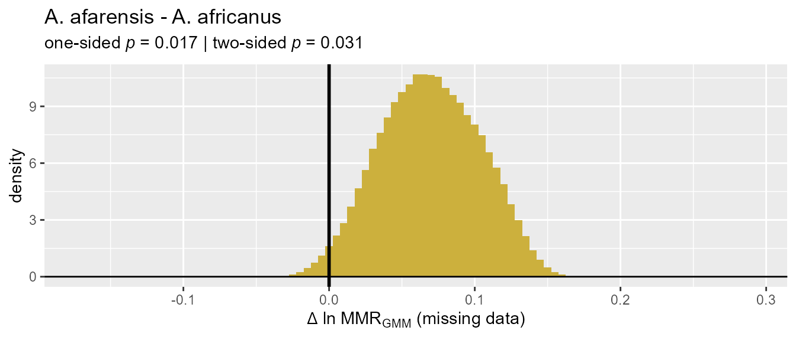

Useful? Please cite it!
Further information about all of these functions can be found in
their help pages. To get the full index of help pages for this package,
use help(package="dimorph").
Also, if you use this package in your work, please use the following citations:
citation(package="dimorph")
#> To cite package 'dimorph' in publications use:
#>
#> Gordon AD (2025). "Interpreting statistical significance in hominin
#> dimorphism: Power and Type I error rates for resampling tests of
#> univariate and missing-data multivariate size dimorphism estimation
#> methods in the fossil record." _Journal of Human Evolution_, *199*,
#> 103630. doi:10.1016/j.jhevol.2024.103630
#> <https://doi.org/10.1016/j.jhevol.2024.103630>.
#>
#> Gordon AD (2025). "Sexual size dimorphism in Australopithecus:
#> postcranial dimorphism differs significantly among Australopithecus
#> afarensis, A. africanus, and modern humans despite low-power
#> resampling analyses." _American Journal of Biological Anthropology_,
#> *187*, e70093. doi:10.1002/ajpa.70093
#> <https://doi.org/10.1002/ajpa.70093>.
#>
#> To see these entries in BibTeX format, use 'print(<citation>,
#> bibtex=TRUE)', 'toBibtex(.)', or set
#> 'options(citation.bibtex.max=999)'.And if you use any of the data sets in this package, please refer to the help page for that data set for the proper citations.
References
Campisano CJ. (2007) Tephrostratigraphy and hominin paleoenvironments of the Hadar Formation, Afar Depression, Ethiopia. Ph.D. thesis. Rutgers, The State University of New Jersey. https://www.proquest.com/docview/304805803
Godfrey LR, Lyon SK, Sutherland MR. (1993) Sexual dimorphism in large-bodied primates: The case of the subfossil lemurs. American Journal of Physical Anthropology. 90:315-334. https://doi.org/10.1002/ajpa.1330900306
Gordon AD. (2025a) Interpreting statistical significance in hominin dimorphism: Power and Type I error rates for resampling tests of univariate and missing-data multivariate size dimorphism estimation methods in the fossil record. Journal of Human Evolution. 199:103630. https://doi.org/10.1016/j.jhevol.2024.103630
Gordon AD. (2025b) Sexual size dimorphism in Australopithecus: postcranial dimorphism differs significantly among Australopithecus afarensis, A. africanus, and modern humans despite low-power resampling analyses. American Journal of Biological Anthropology. 187:e70093. https://onlinelibrary.wiley.com/doi/10.1002/ajpa.70093
Gordon AD, Green DJ, Richmond BG. (2008) Strong postcranial size dimorphism in Australopithecus afarensis: Results from two new resampling methods for multivariate data sets with missing data. American Journal of Physical Anthropology. 135:311-328. https://doi.org/10.1002/ajpa.20745
Gordon AD, Green DJ, Jungers WL, Richmond BG. (2020) Limb proportions and positional behavior: revisiting the theoretical and empirical underpinnings for locomotor reconstruction in Australopithecus africanus. In Zipfel B, Richmond BG, and Ward CV, eds.: Hominid Postcranial Remains from Sterkfontein, South Africa, 1936-1995. Advances in Human Evolution Series. Oxford University Press. pp. 321-334. Book Chapter | Appendix III | Appendix IV
Josephson SC, Juell KE, Rogers AR. (1996) Estimating sexual dimorphism by method-of-moments. American Journal of Physical Anthropology. 100:191-206. https://doi.org/10.1002/(SICI)1096-8644(199606)100:2<191::AID-AJPA3>3.0.CO;2-0
Lee S-H. (2001) Assigned Resampling Method: A new method to estimate size sexual dimorphism in samples of unknown sex. Anthropological Review. 64:21–39. https://doi.org/10.18778/1898-6773.64.02
Reno PL, Meindl RS, McCollum MA, Lovejoy CO. (2003) Sexual dimorphism in Australopithecus afarensis was similar to that of modern humans. Proceedings of the National Academy of Sciences. 100:9404-9409. https://doi.org/10.1073/pnas.1133180100
Sasaki T, Semaw S, Rogers MJ, Simpson SW, Beyene Y, Asfaw B, White TD, Suwa G. (2021) Estimating sexual size dimorphism in fossil species from posterior probability densities. Proceedings of the National Academy of Sciences. 118:e2113943118. https://doi.org/10.1073/pnas.2113943118
Sokal RR, Braumann CA (1980) Significance tests for coefficients of variation and variability profiles. Systematic Zoology. 29:50–66. https://doi.org/10.2307/2412626
Smith RJ. (1999) Statistics of sexual size dimorphism. Journal of Human Evolution. 36:423-458. https://doi.org/10.1006/jhev.1998.0281